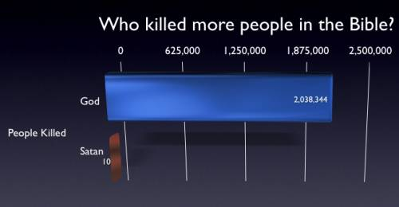

Poll: Do you believe in GOD? (153 votes)
| Yes. | 62 |
| No. | 35 |
| Heck no. | 32 |
| Don't know (agnostic) | 24 |
#6108 1 2006-01-08T21:56:58Z Uncommonturnip1233 GOD rocks what do you think.
Quote
Kablizzy Edit: Edited poll for spelling.
#130885 2 2006-01-08T22:03:27Z Maniac Nope. I'm an atheist.
Although I do believe you need to spell "believe" correctly.
#130897 3 2006-01-08T23:13:27Z Infomix I do believe in GOD but not that God that we created....
#130900 4 2006-01-08T23:24:15Z iangb Nope. I'm the man of science.
Allthough I maintain that there may be things that science as we know it today will never explain. But metascience and philosopy are much more attractive to me than to religion, which seems inconcistent and flawed.
On the other hand, I have no problem with religion, and I admire people if they can truly hold onto their beleif. I see it as an excellent way for upholding a good moral/ethical base, and it can give people great joy. The only thing that irritates me is when religion is dressed up as science, and sent out to fool the masses.
#130903 5 2006-01-08T23:31:08Z Ngaged No, I don't believe in god. I'm like Maniac.
#130916 6 2006-01-09T00:18:43Z krusch I don't believe in god, or a god, or a creator, or anything of that nature.
But I do believe there is more than just the physical....part of things.
Y'know?
It's not really a Yes/No question, for me at least.
#130932 7 2006-01-09T01:21:00Z 9400 Science man myself, but I said that i didn't know.
#130934 8 2006-01-09T01:27:19Z Atilla *Abstains from vote due to poor wording of question and options*
Agnosticism is not a state of not knowing whether or not you believe. Agnostics do not believe in any given god. We do, however, believe in the possibility of said gods. (And is it just me, or is having "heck no" ironic, considering that those saying it probably don't believe in "heck" either?)
#130937 9 2006-01-09T01:34:35Z Bigblargh I'm with Iangb. I don't think there's a God, but it's not like I don't think people should believe in religion. They often teach you just to be nice. Also, with Iangb, I don't like it when people say Intelligent Design should be taught in science. It's not science. Keep you faith in the church, and we'll keep science in the classroom.
And in the same way, those who oppose gay rights should just not allow it in their own churches.
#130938 10 2006-01-09T01:37:47Z iangb with the gay thing...
I have no problem with civil marrages, partnerships, whatever. But part of the Christian faith is that homosexuality is a sin, so I fail to see why people would want, or sanction, a religious homosexual wedding. Prehaps it's just me.
#130942 11 2006-01-09T01:41:41Z Teedle Not... again...
*sighs, and bangs head against table*
This time, I'm going to try VERY HARD not to get drawn into all of this, like I did with about 10 other topics that dealt with religion. Although, to be fair, this one is unique in its spelling.
*abstains from voting*
I'll just stick myself down to "No, but the more I argue against religion, the more I tend to end up respecting it."
#130946 12 2006-01-09T01:45:10Z Bigblargh I thought homosexuality was only interpreted to be a sin because somewhere in the Bible it said that a marriage consists of a man and woman, but I didn't think it specifically forbidden gay marriage. Really, I find this ridiculous, because if there's some God who wants everyone to practice unity and whatnot, you'd think He'd find true love acceptable in any form except perversion, which gays are, well, not.
#130953 13 2006-01-09T02:00:34Z iangb nope.
*digs up quote*
Quote: Leviticus 20:13
If a man also lie with mankind, as he lieth with a
woman, both of them have committed an abomination: they shall
surely be put to death; their blood shall be upon them.
Admittedly it's Old Testament, which is much more bloodthirsty, but it's there to be read by all.
#130973 14 2006-01-09T03:22:55Z Atilla Not all denominations see homosexuality as a sin. As was said earlier, I fail to see why homosexuals would want to join a religion which claims their sexual preferences are sinful, unless they were willing to supress their sexuality (which is probably not a good thing).
#130978 15 2006-01-09T03:38:56Z Kablizzy I'm a fastidious Anti-theist. While I believe in something, I don't believe that any religion does, has, or will have the idea of a personal Deity, or a pantheon thereof, in any way, shape, or form correct. So, you can call me anti-religious, rather than atheist, although the jury is still out on whether there actually is a higher power. I'm a man of science, and the debates that we've had over at relig.forumer.com have been quite productive in refining my ideas further.
#131035 16 2006-01-09T08:32:32Z astro Irrelgious atheist. I make that distinction because I don't believe in godI believe in there not being a god, so it is a beliefand I don't believe in anything else that's religious or metaphysical.
#131280 17 2006-01-10T01:33:40Z jflash Christian. Um, I have nothing more to say...
#131327 18 2006-01-10T03:29:01Z Keron Cyst ...I'm going to try VERY HARD not to get drawn into all of this, like I did with about 10 other topics that dealt with religion....
Well, this isn't a debate like the others; it's just a harmless, opinion-gathering poll

Oh, and Baptist Christian.
#131328 19 2006-01-10T03:30:09Z jflash Err, yeah I didn't think to add my denomination. (Thanks for the idea, Keron.)
Methodist Christian
#131427 20 2006-01-10T18:16:09Z ZZ9 Christinanity and Judisim are half-right along with Science.
Quote
And God Said "Let there be light!" and there was
Thus, the big bang.

#131433 21 2006-01-10T18:33:37Z Keron Cyst Yea, some people have that mindset and try to converge the two together. Pretty interesting, that
")
#131435 22 2006-01-10T18:49:03Z iangb Quote
And God Said "Let there be light!" and there was
No, I'm not going to argue that idea in this post. Anyway, it's possible that I'm wrong and God exists, allthough how He feels about His church is another matter entirely.
I actually posted here to share this:
Attachment (lost): post-29-1136919052.gif
#131436 23 2006-01-10T18:52:10Z Levinous I don't believe in God. Do I have to say more? I don't think of him/her/it/them too often, as if I completely ignore him/her/it/them. I don't believe he's/she's/it's/they're in everything (and everyone), cause that's... um... not really... realistic...
#131437 24 2006-01-10T18:53:23Z Hugoku Gospelic Christian (the last part of the Bible - I/we focus on the life of Jesus; I always forget what it is in English

)
#131440 25 2006-01-10T19:17:39Z coffeefreak Christian. Um, I have nothing more to say...
Nothing to add

#131487 26 2006-01-10T23:38:04Z macaddict_17 I wish people would abstain from the false belief that science and religion conflict and/or have nothing to do with one another.
Also, with Iangb, I don't like it when people say Intelligent Design should be taught in science. It's not science. Keep you faith in the church, and we'll keep science in the classroom.
It is science. Its not just a bunch of Christians teaching Genisis. Its a legitimate theory. As most of you know, I don't think Evolution is even close to true, but alot of you are sick of hearing about it.
As for keeping my faith in church, that is not only encroaching upon my rights, but is the teaching of the devil. He wants Christians not to go and preach the gospel, not to witness, not to be an example. Now, I know there's times not to witness, like during science class, but I am firmly apposed to not arguing, using only science and scientific facts, Evolution vs. Intelligent design in classrooms.
#131520 27 2006-01-11T01:04:26Z Atilla Macaddict, ID is NOT science because it does not adhere to scientific standards of evidence and furthermore, in the form which many people wish it to be taught, it invokes supernatural interference. Only theories which are widely accepted by the scientific community should be taught in secondary science classes. ID is not accepted by this community, and no amount of whining by creationists will change that. It's like atheists claiming that churches must include evolution in the sermon for balance, even though there's a lack of stone tablets saying "Yea, and the Lord did make lightning strike the primordial ooze, and life sprung forth; And the Lord, who was mighty, decreed that this new life would ever improve itself, through the process of natural selection, so that one day it might become as a companion to Him."
And although you have the right to follow your religion, you do NOT have the right to shove it on other people.
#131530 28 2006-01-11T01:24:59Z iangb ^well said^
any more arguing on this topic can be done in another thread, please. Or ressurect an older thread.
This one's for factfinding only.
#131735 29 2006-01-11T22:32:00Z macaddict_17 ID is NOT science because it does not adhere to scientific standards of evidence and furthermore, in the form which many people wish it to be taught, it invokes supernatural interference.
Is not science a tool to discovering the truth? Yes it is. Then what are the standards that it does not adhere to? Is there a standard that says "Science does not under any circumstance allow a God or Divine Being."? If so, then you are excluding a possibility that could be true, and sciences role as a tool to determine truth is no longer there.
Now, as to the form, I merely require that the faults with evolution be taught and the actual facts be shown. No religious faith should be implied. But invoking a supernatural interference is not bad or unscientific by definition.
Only theories which are widely accepted by the scientific community should be taught in secondary science classes.
Totally wrong, and I think I can prove it to you. Shouldn't the truth be taught, rather than the popular belief? Now, are you saying that the truth can only be obtained by asking 'scientists' and 'experts?' Do they determine truth by believing in it? No. Also by your statement, Galileo's discoveries should never have been taught. In fact, new theories would be doomed from the start.
It's like atheists claiming that churches must include evolution in the sermon for balance, even though there's a lack of stone tablets saying
No, because a church is ordinated for religion. A school is not. So when a school teaches things contrary to a religion, subliminally saying that "Your religion cannot be true" and evolutionary scientists saying that the battle for a new humanistic religion must be won in classrooms, it violates church and state separation. A school must try to show a balanced view, a church has permission not to. You don't have to go to church and have religion shoved on you like you do in Biology.
#131763 30 2006-01-12T00:00:04Z Baraba any more arguing on this topic can be done in another thread, please. Or ressurect an older thread.
This one's for factfinding only.
Did you read Iangb's post, sir?
Is every religion based topic destined to debate?
Can we not share our collected and diverse opinions amongst ourselves without feeling the need to bicker and argue?
#131778 31 2006-01-12T01:19:42Z Atilla Debate continued here, for anyone that cares.
Is every religion based topic destined to debate?
Yes, because it's something many people feel strongly about.
#131779 32 2006-01-12T01:24:21Z Keron Cyst Indeed. Post only regarding your thoughts from the poll in this thread from here on out or watch me prune them (you can't move individual posts into another thread, unfortunately

).
#131911 33 2006-01-12T18:17:36Z Tsukatu MacAddict,
Shouldn't the truth be taught, rather than the popular belief? Now, are you saying that the truth can only be obtained by asking 'scientists' and 'experts?' Do they determine truth by believing in it? No. Also by your statement, Galileo's discoveries should never have been taught. In fact, new theories would be doomed from the start.
Truth is subjective. What is actually taught is what those people that are paid to be smarter than a 14-year old smartass creationist believe should be taught. I trust the thousands of older, more experienced, more educated, and clearly more intelligent scientists over you. They also have fancier palm pilots (c'mon, a Zire21? Those things are pathetic; no computing power, no color, two buttons, and no backlight. It doesn't surprise me that you prefer Macs, too).
And are you saying that the truth is held back because of nazi groups who hide the truth from people? As you believe that evolution is wrong and the creationist idea is correct, right? Enjoy the bitter taste of your own medicine, theist.
Hail Satan!
#132172 34 2006-01-13T23:09:59Z macaddict_17 Whoah ther, Suki. I detect flaming in the Intelligent/Philosophical subforum! Hey, that ain't allowed.
Truth is objective. Because if truth is subjective, I could say that I am using a Mac, and you could say I'm not, and we'd both be right/wrong/neither. Thus Logic does not exist, so don't debate.
#132176 35 2006-01-13T23:34:56Z iangb Truth is objective. But opinion is subjective, as is emotion (which, IMO, is more irrational opinion). Belief is an opinion, therefore belief is subjective.

#132759 36 2006-01-16T00:25:18Z Tsukatu macaddict_17,
if truth is subjective, I could say that I am using a Mac, and you could say I'm not, and we'd both be right/wrong/neither.
In this example of yours, neither of us have demonstrated any proof to support our claims. Therefore, in this example, both of us are morons for our blind faith.
You have utterly failed to demonstrate with this example that truth is objective.
Either way, I should clarify what I meant (it's mostly what iangb just said):
There is truth (that is, what is the actual case in any situation), but no conscious being is capable of knowing whether or not his opinion is the objective truth; the objective truth is obtainable, but it is not possible to know when this is the case.
What I should have said was that understanding of truth is subjective, which is as close as we get to the objective truth.
#132802 37 2006-01-16T03:12:43Z Keron Cyst ... Belief is an opinion...
Have you forgotten
maximo's posts already? Need I quote them?
#132821 38 2006-01-16T05:48:32Z The_Juggler I have been going to a private college funded by the United Methodist Church (West Virginia Wesleyan College) and I regularly attend a Roman Catholic Church.
I think that going to school here has made me feel more religious - I have thought about what it means to be religious and devote oneself to ones god. At the same time, I have become more distant from the church. The things that are said and done in the name of my god are often more evil than anything! I just cannot associate myself with such people.
I actually saw something somewhat horrible today. As some of you may know, there has been this coal mining incident in West Virginia about 2 weeks ago. Some miners were killed in an accident - tragic and everything. Anyway, they had a memorial service in the chapel of my school for the families.
Then - this is where it gets a little insane - this Baptist Church protest group came in from Kansas and protested the memorials and funerals of those miners because they claim that all West Virginians are homosexual!
So I went to the memorial service and I see these protesters outside shouting the most horribly obscene things to the families that just lost their husbands and fathers in the most tragic way.
I quote from the protesters and their website,
www.godhatesfags.com:
*Thank God for the 12 dead miners
*They worship dunghill fag gods on Brokeback Mountain and their holy book is the Da Vinci Code
*God Hates You
*God Hates America
*God Hates Sweden (what did Sweden ever do?)
*The United Methodist Fag Church
*Die, fag lover!
How Christian is that? I do not imagine that God approves of such gross obscenity - and at a memorial service no less.
I am a pretty big fan of God and I go to church, but I just cannot support everything that they do because it might mean that I support such people as these protesters.
EDIT: Let us not stray off-topic by discussing the morality of homosexuals and all related to them. This is a discussion about your belief in God.
#132833 39 2006-01-16T06:17:10Z Keron Cyst ... this Baptist Church protest group came in from Kansas and protested the memorials and funerals of those miners because they claim that all West Virginians are homosexual!...
That's just stupid. I'm Baptist myself and I don't support that crazy pack at all. Just because they're gay doesn't mean you're not allowed to help them, retards...
#132849 40 2006-01-16T07:24:25Z Atilla Sad, that some people should be so blind to the suffering of others (or, worse, enjoy it).
I went to a Catholic school, but I don't think it effected my religious affiliation much (I am, after all, still agnostic).
#132868 41 2006-01-16T08:29:16Z Atramentis I don't belive in god.
I think that religion is out of date but still clung to because it gives people a sense of purpose and such.
Heaven is supposed to be in the sky on clouds and stuff. This crap was made up when nobody acctully know what was up there, now that we know whats up there, and we know what's in space and we know that heaven is nowhere to be found, christians just say "well, it's there anyway, we just don't know where".
Also, Jesus curing lepars, turning water into wine and magically dulicating a loaf of bread and a bunch of fillets...
Things like this are now understood, and now we know they can not be done. The people who wrote the bible didn't know about anything that wasn't right in front of them so nobdy really questioned crap like this.
Now that it is understood, there are still those that decide to ignore some parts and just stick with the "good stuff".
Also MacAddict, Who are you kidding when you try to tell people that you think your religion should be taught in schools but you're not cramming you religion down people's throats?
The only stuff that should be taught in schools is the stuff that is true no mater who you are or what you belive.
And there is no way itelligent design could be possible simply because our design is well...dumb.
Human beings are so impractical and poorly designed that if god did design us he should be sitting in the corner with a big cone hat like this kid:
I'm done
#132870 42 2006-01-16T08:44:37Z blue_tetris Most Baptist groups encourage that you read the Bible for yourself and find your own meaning in it. That's why Baptist churches run the gambit from very neutral and spiritual to Earth-friendly to hellfire and damnation. Certain Baptist churches, particularly those in the South, have read the Bible and determined it to mean that God is wrathful and hates specific groups. Other Baptist churches will tell you to believe what you like.
I would hardly consider this Wilcox Baptist Church to be the norm of their denomination. I mean, most Baptists shake tamborines (not torches and picket signs) and sing hymns (instead of yelling antiquated terms for "sinner"). Of all the denominations of Christianity, Baptist is still generally the least anti-anything. To my knowledge, most Baptist think Jews are going to heaven. Not that that has jack to do with anything.
That said, I think religion is wrong in this aspect (because I don't want to get into any others right now):
Humans are treated very differently than other animals. Is it a way to ethically explain why we lord over them as we do? Was it a way to proactively combat evolution (and other sciences)? I dunno.
#132873 43 2006-01-16T09:01:55Z Teh On the topic of creationism, and I'm sorry to go so off topic, but-
I have difficulty believing that a benevolent and omnipotent Lord would design parasitic worms that spend their entire lifespands eating catterpillars from the inside out.
(That's an extremely paraphrased quote from... I believe it might have been Darwin himself... but seeing I can't really remember the original wording, it's sort of moot point. In any case, this is what I believe.)
Coming from a Christian school, I must say that Religion (or the way it is taught) is something that I am firmly against. Whilst Religion in itself- giving people a sense of purpose or inner peace- is probably a good thing, what it influences people to do (and the way it seems to help spread ignorance and unfiar predudice amounst the world) is a bad thing.
No man is born with predudice in his heart. But it can be introduced from a very early age, and often is- from a Christian viewpoint.
(This isn't saying religion is necessarily all bad, though, and definately not that Christians are by default bad people- it's just some of the reasons I'm at peace with my decision to be an athiest.)
#132876 44 2006-01-16T09:53:23Z Atramentis No man is born with predudice in his heart.
I couldn't disagree more.
Prejudice is what separates us from the animals.
Prejudice is a very important survival tool.
If you go down to the train station at night and you see two guys in coats and hats smoking and making some kind of exchange, are you going to ask them if you can play uno with them too?
NO!
why? because you judged them as a hazard without acctully knowing anything.
Prejudice is great but like all great things looks ugly because it is abused. People deicide to whip out the prejudice department at the wrong times and such but I am getting of track so I will close with a feeble attempt to get back on track...
...and the god said all this stuff about things but Darwin said "hey, no it's not".
so ye, down with god and up with Darwin.
#132885 45 2006-01-16T12:02:11Z iangb Nope. Unless you count 'warmth=good, pain=bad' as prejudice.
Your sociey and your upbringing are what give you predjudices, not anything that happens before birth. Would a toddler stay away from the people in dark coats? Or would he go to take a look?
And animals are predjudiced, too. For example, all non-carnivore birds are predjudiced that anything bigger than them is a threat, when really it's just some kid with a slice of bread. And sometimes (like pigeons in Trafalger Square) those predjudices are overturned, and people are seen as a possible source of food. Or something.
#132900 46 2006-01-16T13:33:13Z The_Juggler I would like to mention that man's domination over animals is how my dad and his whole family justifies white supremacy.
They say that God made man and God made animals; black people (they don't use such a nice word) are animals and white people have authority over them.
I was raised to crap like this. I have wondered how I turned out as tolerant and non-racist as I have and I think that it is just because I am rational and not ignorant.
#132999 47 2006-01-16T21:10:43Z Tsukatu Human beings are so impractical and poorly designed that if god did design us he should be sitting in the corner with a big cone hat like this kid:
#133010 48 2006-01-16T22:28:58Z tktktk Heaven is supposed to be in the sky on clouds and stuff. This crap was made up when nobody acctully know what was up there, now that we know whats up there, and we know what's in space and we know that heaven is nowhere to be found, christians just say "well, it's there anyway, we just don't know where".
Also, Jesus curing lepars, turning water into wine and magically dulicating a loaf of bread and a bunch of fillets...
Things like this are now understood, and now we know they can not be done. The people who wrote the bible didn't know about anything that wasn't right in front of them so nobdy really questioned crap like this.
This point is totally irrelevant. The whole premise of religion is that it takes place above the physical realm. No amount of physical evidence will disprove the existence of heaven, simply because heaven presumably exists outside of the physical. I don't think even early Christians necessarily believed in a physical heaven, as you seem to be implying.
The same goes for Jesus' miracles. Of course they can't happen under normal circumstances, but there is no reason that God wouldn't be able to go beyond those boundaries.
#137051 49 2006-01-29T13:59:40Z sTEFANo I'm Orthodox Christian so I believe in God
#137110 50 2006-01-29T17:16:44Z grr ID is NOT science because it does not adhere to scientific standards of evidence and furthermore, in the form which many people wish it to be taught, it invokes supernatural interference.
Is not science a tool to discovering the truth? Yes it is. Then what are the standards that it does not adhere to? Is there a standard that says "Science does not under any circumstance allow a God or Divine Being."? If so, then you are excluding a possibility that could be true, and sciences role as a tool to determine truth is no longer there.
there is no hard proof of a god, nothing you can see. you can speculate from creation that god made this and that, but no one has picture or hard proof of a god.
that is the why it does not stand up to scientific scrutination. you have religion, we have science.
this should be here
http://metanet.2.forumer.com/index.php?showtopic=6758#139145 51 2006-02-03T23:08:13Z Ravenclaw Christian.
#139148 52 2006-02-03T23:16:48Z BSBen Why did you put a picture of jesus up?
#139375 53 2006-02-04T13:05:43Z Teh Dude That picture is highly unrealistic. If you were crucified through your hands, they would simply rip apart and you would fall down.
#139379 54 2006-02-04T13:16:11Z Atramentis Also because Jesus was an arab. Not some white-guy with nice hair.
#139435 55 2006-02-04T18:01:23Z Ravenclaw Well, that was an illustration. If you don't believe in God, then you probably don't think Jesus was his son. That's all I have to say.
#139468 56 2006-02-04T20:23:09Z iangb heh... jesus was God's son. Jesus was God. Both things are 'true', apparently.
#139548 57 2006-02-04T23:16:17Z Tsukatu The picture doesn't show Jesus' pierced side, either.
What a crock.
#139569 58 2006-02-05T00:00:43Z BSBen heh... jesus was God's son. Jesus was God. Both things are 'true', apparently.
Jesus fathered himself!!! OMFGZORZ!!!!!!!!!!!!!!!!!
Shouldn't that cause a rip in the space-time continum?
#151622 59 2006-03-04T21:18:51Z tl0 back to topic: who believes in god?
this is a question which leads to a lot of incorrect answers, as many people tend to equate god with religion, which is obviously wrong. religion is a human way of describing and trying to experience divinity. perhaps the question "do you believe in miraculous things" or something like that would have been better.
anyway, i actually (that may change) neither believe in religion, nor in god. i don't even think there's a sense behind life.
#151631 60 2006-03-04T21:40:16Z Tsukatu I do believe that the formal definition of a god used in these kinds of discussions is "a supernatural or transcending being or force."
"Supernatural" means that the being is to some extent outside of or otherwise not a part of our natural universe (the nature of things, you might say; not plants and animals 'n junk), in case there was any confusion there.
#157617 61 2006-03-25T02:38:04Z Prince Lek I have never belived in a god. But i do think some people do need to believe in some "higher" being to give them hope, and make them think they have guidence through life. I believe God and the stories in most religions are just explinations of the unkown, just like the ancient egyptions used a gods to explain natural accurances.
#157736 62 2006-03-25T11:21:27Z ZZ9 I don't care if God exists. He doesn't seem interested in us.
#157741 63 2006-03-25T11:43:44Z wilderness Before you start a thread, please search the forum.
This has been done.
Too many times.
#157748 64 2006-03-25T13:14:28Z krusch @pariah: This thread was started on the 9th of January. So, I doubt the creator is still watching it.
*shrugs*
It's yielded a load of debating as well.
But yes, these things are done too often.
Edit: Any my opinions have changed since my original post here. I now have no such belief in anything unless it's physical/mental.
In my mind, there is so god, no higher.....thing.
Word.
#157749 65 2006-03-25T13:23:08Z wilderness @pariah: This thread was started on the 9th of January. So, I doubt the creator is still watching it.
*shrugs*
It's yielded a load of debating as well.
But yes, these things are done too often.
Edit: Any my opinions have changed since my original post here. I now have no belief in anything besides the physical/mental world.
In my mind, there is so god, no higher.....thing.
Word.
Oh. Well. I'm kind of away right now. No attention to give.
But yes. No god. Or at least I've not known one, so one doesn't exist for me.
#158931 66 2006-03-28T18:43:25Z McP3000 I believe in god
I think of him differently than some partial being that many evangelicals and muslims think.
I dont want to go into my long description, but im a methodist christian...
and proud of my beleif too...
#158949 67 2006-03-28T19:11:46Z coffeefreak Well...
I do believe in God. Need I say more?
Go on. Flame me. You know you want to.
#158973 68 2006-03-28T20:10:41Z Tsukatu What is with Christians these days acting like a freakin' minority?
Don't be such emo kids. Have some pride.
Jesus...
#158979 69 2006-03-28T20:25:28Z CDotLeach I believe in god, im a christian so I guess I have to.
#159628 70 2006-03-30T03:16:21Z elaxion uh, no, I have no faith, I cant trust "faith"
#165762 71 2006-04-17T15:26:48Z Pleasant_Cry there is NO god.
#165767 72 2006-04-17T15:58:01Z sweep What I don't understand is how the one with the least votes is don't know.
I'm sorry, but it's the only logical option. I can understand votes of yes, some people have a faith, and this a faith they stick by and truly believe in. But otherwise, who are you to say there is or isn't a God? What evidence do you have to prove it either way? Seriously. There is none. Because you can't know what a God would be like, or exactly what degree of control a God would constantly be able to maintain, it's all beyond comprehension, and therefore if you did not vote agnostic then I have to view you as incredibly illogical.
Apart from those with a real faith that there is a God. That is different if, because it's part of a belief that their religion is the correct religion.
#165795 73 2006-04-17T16:52:06Z disconinja I noticed I voted here but hadn't posted... hmm...
Lutheran Christian, we try and follow the Bible by the letter, as literally as possible.
That includes homosexuality being a sin, but also that in Jesus all sins are forgiven.
I pretty much agree with everything Lutherans say, well except for the part about non-Lutherans going to hell.... The only other denomination fo Christianity I have issues with is Catholicism. The Catholic church to me has distorted so many things about the Bible.
I respect other religons too, but I really, really dislike atheists. To just deny the existence of a God is frantic justification of immoral actions. Just because you don't believe in God doesn't mean there isn't one. By denying the existence of God, you are actually proclaiming that there is one and that you are it and there is nothing above you. It's conceided and Narcissistic and retarded.
#165808 74 2006-04-17T17:24:58Z astro What I don't understand is how the one with the least votes is don't know.
I'm sorry, but it's the only logical option. I can understand votes of yes, some people have a faith, and this a faith they stick by and truly believe in. But otherwise, who are you to say there is or isn't a God? What evidence do you have to prove it either way? Seriously. There is none. Because you can't know what a God would be like, or exactly what degree of control a God would constantly be able to maintain, it's all beyond comprehension, and therefore if you did not vote agnostic then I have to view you as incredibly illogical.
Apart from those with a real faith that there is a God. That is different if, because it's part of a belief that their religion is the correct religion.
So you're saying you can understand faith in their being a god, but not faith in their not being a god (atheism)? That's not fair. Indeed, I can't tell you 'there is definately no god, and the following proves it: ax+y/4^g.l = ry*pi.r^2 = false', but I do have reasons to
believe that there is no god, and therefore I choose to believe that.
And,
disconinja: what you said is absolute crap. Why are you automatically of better moral fibre just because you believe in a supreme deity and I don't? Atheism isn't a 'frantic justification of immoral actions' in any way whatsoever. Sure, some atheists do act immorally, but so do some Catholic priests. Then again, you said you have major issues with Catholicism, but still, I don't think the Bible says "thou shalt molest thy little ones".
You said 'Just because you don't believe in God doesn't mean there isn't one'. Your point being? Just because
you believe in God doesn't mean there is one.
Your last point about atheism being narcissistic and 'conceided' makes so little sense. You suddenly state, with no further explanation, that 'by denying the existence of God' I am 'proclaiming that there is one', and that '[I am] it and there is nothing above [me]'.
#165836 75 2006-04-17T18:35:24Z McP3000 YES!!!! Another philosophical flame war/fight. I would enter, but i am already entrenched in several others so anyway....continue on.
#165944 76 2006-04-18T00:39:43Z Tsukatu What I don't understand is how the one with the least votes is don't know.
I'm sorry, but it's the only logical option. I can understand votes of yes, some people have a faith, and this a faith they stick by and truly believe in. But otherwise, who are you to say there is or isn't a God? What evidence do you have to prove it either way? Seriously. There is none. Because you can't know what a God would be like, or exactly what degree of control a God would constantly be able to maintain, it's all beyond comprehension, and therefore if you did not vote agnostic then I have to view you as incredibly illogical.
Apart from those with a real faith that there is a God. That is different if, because it's part of a belief that their religion is the correct religion.
Incorrect you are, my good sweep.
First off, agnosticism is not an alternative choice to the question of theism vs atheism. Theism and atheism label your belief, whereas agnosticism professes ignorance of the subject, which has to do with knowledge. Belief and knowledge are distinct. For this reason, agnosticism and theism are two different properties, completely independent of each other. Instead, you can describe yourself one of the following ways:
Theist: you believe X
Atheist: you don't believe X (which is quite different from "you believe that not X"; atheism is negative in its nature; it is denial, NOT assertion to the opposite of theism)
Slap on the term "agnostic" before one of the above two: whatever your theist/atheist leaning, you believe that at least some portion of the question of X is closed to human knowledge.
So you can be one of the following four:
Theist
Atheist
Agnostic Theist
Agnostic Atheist
Saying that you're agnostic is not enough information. It tells what you know, which does now answer the question of what you believe. Theism and Atheism are all-inclusive descriptors. You cannot be neither theist nor atheist. If you are "on the dividing line," it comes down to practice. Do you pray to, worship, or otherwise acknowledge a deity? If so, you are an agnostic theist. If you do no such thing (inaction), then you are an agnostic atheist.
On a scale based entirely on my own opinion, sanity increases moving to the right:
Theism -> Agnostic Theism -> Agnostic Atheism -> Atheism
(additionally, there are generally two kinds of atheist - the "implicit" atheist refuses to believe that X exists; the "explicit" atheist argues vehemently that X cannot exist; I am an explicit atheist)
I'll take the time now to define terms that I will use in the rest of this rant. When I say "god", I mean any being that is at least partially super-natural or transcending of the natural universe. A being that is within the natural universe is not worthy of worship, for obvious reasons that I will get into if you're too tired to think about it, and maybe, like, give me a brownie or something. The agnostic says that this being, because it is supernatural, is inherently unknowable.
From here, we can either (a) attack the idea of a supernatural being, or (b) attack the idea of an unknowable being. Let's start with (a).
(a) Saying that a god is "supernatural" doesn't give us any positive assertions about a god. It tells us what a god isn't - it's not natural. The question remains: what positive characteristics can we ascribe to a god?
On a slight tangent: the notion of a supernatural being is incomprehensible. We're supposed to conceive of a being exempt from natural law - a being that does not fall within the domain of scientific explanation - but no one can explain how we can conceive of existence other than "natural" existence. "Natural existence" is a redundancy; we have no familiarity with "unnatural" existence, or even a vague notion of what such existence would be like. We cannot even begin to claim that we think that there exists a supernatural being - it is completely irrational to do so, as such a claim has no foundation, and therefore no validity.
Natural law is based upon the limited nature of existence. It pertains to the presence of regularity in the universe, and for this reason is referred to as the "uniformity of nature." Entities behave according to specific causal conditions, and we know that an object will act according to a set series of laws; an acorn, given the right conditions, will grow into a tree; it will not grow into an elephant; a dog will not sprout wings and breathe fire; a colony of ants will not burst into a chorus of the National Anthem.
This next sentence is crucial: Every entity has a specific nature, specific characteristics, that determine the capacity of that entity. For example, a plant has a specific nature and specific characteristics that place the capacity for thought out of possibility. Basically, the characteristics of an entity determine what an entity can and cannot do; limitations are an integral part of the natural universe, and they constitute the foundation of natural law. Regularity in nature is the consequence of limitations. No existing thing can randomly do anything at any time under any conditions. This uniformity in nature permits the systematic study of reality (science) and the formulation of general principles of nature ("laws") which are used in predicting future states. While the particular scientific laws will change as man's knowledge increases, the principle of natural law itself is a constant; it persists as a corollary of existence.
That last paragraph is vital to the understanding of the next series of arguments. Please make sure you didn't just skim that last paragraph, and that you actually understand it.
A god, as we have seen, cannot exist within this framework, but theists say it exists nonetheless. This brings up the considerable problem of how anything can exist as a supernatural being. If a supernatural being is exempt from natural law, it does not possess specific, determinate characteristics. These attributes would impose limits, and these limits would restrict the capacities of this supernatural being. Essentially, assigning any characteristics whatsoever to this supernatural being would chain it permanently and completely into the natural universe, and this would disqualify the being as a god. For this reason, a god must be a being that is without a specific nature, a being that is indeterminate - a being, in other words, that is nothing in particular. But these characteristics (or, more precisely, lack of characteristics) are incompatible with the notion of existence itself.
To
be is to be
something as opposed to
nothing, and to be
something is to be something
specific. A supernatural being, if it is to differ in kind from natural existence, must exist without a limited nature - which amounts to existing without any nature at all.
So far, as an agnostic, you should be nodding your head and saying, "I told you so. I said God is unknowable, didn't I?" Because both a theist and an atheist can agree with the unknowability of a god, but an atheist uses it to reject the idea of a god whereas a theist uses it as evidence that a god falls beyond the scope of human understanding, we need to move on to another argument, one that argues not with metaphysics, but with epistemology. Coincidentally, wasn't that our (b), attacking the idea of an unknowable being?
(b) The belief that god is basically unknowable is the most important element of theistic belief. It is shared by all theists. Their only argument is with regard to what degree god's nature can be known. Remember that theists don't just believe that the nature of a god is unknowable
now, but that it is unknowable
in principle; Man will never understand a god.
Here's the kicker: if one believes that a god is inexpressible, then one quite literally has nothing to say and should therefore retreat into silence. Talking about it will only lead to all kinds of absurd paradoxes.
If consistently adhered to, an agnostic theist will have the following discussion with an atheist...
Theist: "I believe in the existence of a god."
Atheist: "What is 'god'?"
Theist: "I don't know."
Atheist: "But what is it you believe in?"
Theist: "I don't know that either."
How is the agnostic theist's claim to the existence of a god significant in any respect? How does his "belief" differ from no belief whatsoever?
So here it is: The flaw with agnostic theism (I'll talk about agnostic atheism in a little bit) is that it is not possible to think something exists without some knowledge of what it is that is alleged to exist. In the words of Ludwig Feuerbach (I love this guy): "To deny all the qualities of a being is equivalent to denying the being itself. A being without qualities is one which cannot become an object to the mind, and such a being is non-existent." If a god is unknowable, then the concept of "god" is totally devoid of content, and the word "god" becomes a meaningless sound. To state that "god exists", where "god" represents absolutely nothing, is to say nothing at all. It's the same as saying, "a blark exists." The agnostic, any agnostic, by refusing to state the content of the word "god", exempts himself from reason and serious consideration.
Back to agnostic theism, to posit the existence of something which, by its nature, cannot be known to man is to submerge oneself in hopeless contradictions. In particular, to claim that a thing is unknowable, one must first know that it exists - but then one already has knowledge of it, to that extent; to assert the existence of the unknowable is to claim knowledge of the unknowable, which is a contradiction, as it no longer becomes unknowable.
If you feel like bending your mind into a pretzel, consider the overkill argument that the claim that a being is incomprehensible is itself demonstrative of knowledge of that unknowable thing. To state that a being is incomprehensible is to pronounce knowlege of its nature, in which case we are again involved in a contradiction.
It devolves into two possible situations. You can claim something is unknowable, but be unable to attest to any qualities of this unknowable thing, which equates to saying nothing in the first place, or you can produce knowledge in support of your claim, which results in several contradictions right off the bat that cannot be avoided simply because of the nature of your original asserion.
(On another minor point, again overkill, consider that accurately labeling a thing "unknowable" requires omniscience.)
To claim that god is unintelligible is to confess that one does not know what one is talking about. It is equivalent to saying: "I will explain the concept of a god by pointing out that it cannot be explained."
Atheists like myself contend that the concept of a god is unintelligible, this being a major reason why it cannot be accepted by any rational man. The theist who openly admits this should definitely not expect to be taken seriously. The idea of the unknowable has been reduced to an insult to the intellect, and it renders theism wholly implausible.
By trashing the notion of (b) an unknowable being, we have indirectly destroyed the concept of (a) a supernatural being. If it is irrational to assert the existence of an unknowable being (I should hope that after reading all of that that you understand that it is, in fact, irrational to assert this), it is equally irrational to assert the existence of its metaphysical corollary: the supernatural being. If knowledge of the unknowable is a contradiction (duh), knowledge of the supernatural is a contradiction as well. This has the effect of excluding agnosticism from the sphere of rational consideration, in which case atheism wins by default as the Burden of Proof idea decrees.
From here, a person who still claims to believe can go two ways. He can abandon his defense of a supernatural being altogether, which is a simple surrender to atheism, or he can continue to proclaim the existence of a supernatural being that is knowable to humans.
The second path is usually adopted by the theists (especially Christians, not surprisingly) that like to think they know what they're talking about.
However, as you claim to be an "agnostic," I think my arguments against that position would be in vain, as you have already rejected them. Even if you for some reason don't reject them (the ones that begin defining god, which you can see above doesn't make sense), you should still be well aware that once a being can be described by any characteristic that makes sense in the natural universe, it is irrevocably, permanently, and completely chained within the natural universe. Any description gives it limitations, and any limitations removes any and all possibility that the being exists outside of the natural universe.
If you understand the above argument (the whole thing), you can see that on my sanity chart...
Theism -> Agnostic Theism -> Agnostic Atheism -> Atheism
...the agnostic atheists are no different from the atheists, so they might as well call themselves as such, and the agnostic theists split up into two groups, one that joins the atheists, and the others that retreat to theism. This happens because agnosticism no longer becomes a rational position to take, and it is devoured entirely by atheism.
Congratulations, sweep, you've forced me to put into words that which accounts for 5% of my disbelief in a god.
#165962 77 2006-04-18T01:14:05Z Atilla What I don't understand is how the one with the least votes is don't know.
I'm sorry, but it's the only logical option. I can understand votes of yes, some people have a faith, and this a faith they stick by and truly believe in. But otherwise, who are you to say there is or isn't a God? What evidence do you have to prove it either way? Seriously. There is none. Because you can't know what a God would be like, or exactly what degree of control a God would constantly be able to maintain, it's all beyond comprehension, and therefore if you did not vote agnostic then I have to view you as incredibly illogical.
Actually, since the question is "Do you believe in God?" and not "Is there a god?", agnostics should answer "No" rather than "I don't know". I don't know if there are any gods. Since I don't know whether they exist and what they would be like if they did, it's a bit hard go around believing in them*. And I certainly don't believe in a monothestic god, as implied by the title, because it is in any case only one of many possibilities
By denying the existence of God, you are actually proclaiming that there is one and that you are it and there is nothing above you.
I deny the existance of invisible pink unicorns**. This must mean I am declaring myself to be an invisible pink unicorn, and that there is nobody more invisible, pink, or unicorn-like than me.
*"O Possibly Great and Perhaps Mighty Indeterminate Number of Entities With Unspecified Characteristics, please hear or otherwise percieve in some manner my humble request for favourable circumstances, unless you would find it irritating, offensive, or otherwise unpleasant, or wouldn't care anyway."
**That is, they would be pink if you could see them, which you can't, because they're invisible.
#165967 78 2006-04-18T01:26:33Z Guest i am a strong believer in God
#166056 79 2006-04-18T03:46:09Z Tsukatu Atilla: Yeah, that's what I... yeah. I just said it wordier, and it happened to be involved in an argument against agnosticism as a rational stance to take.
#166066 80 2006-04-18T04:15:18Z abcdman2 Christian. Um, I have nothing more to say...
Ditto
#166073 81 2006-04-18T04:26:11Z Cerberus I believe in god, but there are many different pictures of him and his face.
What does he look like?
#166935 82 2006-04-20T02:22:57Z Tsukatu *gersigh*
FINE.
I'll stop posting the complicated junk.
You can live in denial as an agnostic if you really want, I don't care.
*grumble* *grumble*
#167096 83 2006-04-20T13:59:01Z McP3000 i didnt mind the complicated junk, i thought it was nice and informative.
It was one beastly post too....

#168449 84 2006-04-26T00:52:13Z Mysterypea Quote
[image lost: post-29-1136919052.gif]
For a guy who believes most in science. I just believe in god... But i don't get the Whole math stuffing.
Quote
Then god said
Then you see math... Weird.
#168453 85 2006-04-26T00:58:02Z iangb In that pic, the math is many of the physical laws that the universe seems to obey. See how many you recognise, kids!
Basically, it's saying that God created the rules, and the rules created the universe.
#168527 86 2006-04-26T03:39:35Z McP3000 i saw E=MC^2 and that was it for me...physics is next year for me
#169343 87 2006-04-28T23:58:22Z beanhead the only way i can understand it possable for 'god' to match all of his descriptions, like 'god is everywhere', is that 'god' is just another way of saying 'matter' or 'existance'
#169814 88 2006-04-30T09:58:53Z ska Yes, I believe in God. But truthfully I am only associated with God because I was brought up as a Christian. I respect people's decision to deny God's existence. Although the way I see it if you don't believe in a religion you shouldn't be against God no matter how much it (Christianity) ticks you off.
#169832 89 2006-04-30T10:54:52Z mascote_ponto I don't belive in God, untill I'm given a reason to do so.
I agree that it can be good for us to belive something superior, but that doesn't make it real.
#169833 90 2006-04-30T11:11:18Z sweep What I don't understand is how the one with the least votes is don't know.
I'm sorry, but it's the only logical option. I can understand votes of yes, some people have a faith, and this a faith they stick by and truly believe in. But otherwise, who are you to say there is or isn't a God? What evidence do you have to prove it either way? Seriously. There is none. Because you can't know what a God would be like, or exactly what degree of control a God would constantly be able to maintain, it's all beyond comprehension, and therefore if you did not vote agnostic then I have to view you as incredibly illogical.
Apart from those with a real faith that there is a God. That is different if, because it's part of a belief that their religion is the correct religion.
Incorrect you are, my good sweep.
INSERT GARGANTUAN ARGUMENT HERE
Congratulations, sweep, you've forced me to put into words that which accounts for 5% of my disbelief in a god.
Heh. Valid.
I don't think the argument of if thesists are allowed to be so why can't atheists is actually flawed. My point is that thesists are generally working on a solid faith, based on very little facts. That's what religion is. Faith. Theisists, on the other hand, are more based in Science. I'm trying to say it's impossible to scientifically disprove a supernatural overawing God type being... Tsukatu, you had a damn good go at that. Congrats. But, I still think that you ironically require faith in there not being a God if you're atheist... if you get what I'm saying. You can't fully disprove it, and that was my point earlier.
Perhaps I was wrong to a degree, but basically I still think what I said was valid.
#169835 91 2006-04-30T11:57:30Z Harley DO!
one question though, if God created homosexuals Himself, how come it is a sin?
#169845 92 2006-04-30T12:29:15Z Red Reamer Because devout Christians don't recognize logic as a valid arguement.
#169857 93 2006-04-30T13:45:43Z ZZ9 Permission to put that in my sig?
#169870 94 2006-04-30T14:22:13Z McP3000 ne question though, if God created homosexuals Himself, how come it is a sin?
Because Christians beleive that Homosexuality is a choice, and that they are not born that way.
#169881 95 2006-04-30T14:36:36Z Harley but homosexuals can't choose to be gay, or straight for that matter, say a gay (or lesbian) guy/girl was getting a load of shit from all around about being gay/lesbian, and wanted to be straight, but no matter how hard they try, there is always that attraction to the same sex...?
Happened to a friend of mine, he is gay and proud of it!
Mant people aren't religeous, but still find it wrong to be homosexual, why?
EDIT: @ red reamer: because they have faith, which replaces their logic explanations, which is a choice made by them, and me,
In fact I do use logic as an argument and I am christian
#169882 96 2006-04-30T14:37:32Z ZZ9 genetics?
#169884 97 2006-04-30T14:40:09Z Harley Ok then, I guess that's valid;
but why make the choice to if everything in this world is about choice, does it make them feel better to bag others out because they are diverse?
#169941 98 2006-04-30T16:42:42Z Keron Cyst genetics?
Kinda makes you wonder how two of the same gender can do something together.

#170113 99 2006-04-30T22:31:32Z elaxion no offense to god believers, but how could you look at an ape and a human, and they way they react and not think that there were genetics and also the bigbang theory is proof as well, they have documented proof of the bigbang before
#170147 100 2006-04-30T23:19:39Z cyberjuda i would say get your theories straight, big bang is a THEORY, not a fact
#170188 101 2006-05-01T00:38:29Z the_psychohazard Ok, I don't know about you guys, (or maybe I do, seing as that I read a lot of the posts) but I am very ATHEIST, sometimes anti-theistic, and I am very suspicious of everything, especially something that has anything to do with religion. If you don't see why, check the link:
Why Satan? Misconceptions about Satanism, Satanists
Also, I am especially, doubly suspicious of anything that has to do with any sect of the Christian Church. That church has twisted, changed, re-written, deformed, devolved, undone, redone, reworked, copied, mis-quoted, lied, and propogated everything any previous religion had anythign to do with. The Christian Church is a paradox, a paradigm, an oxymoron, and moronic all wrapped up in one nice, clean, neat package. There are nearly no original ideas that the Church has come up with, and the Church is so hippocritical it's not even funny.
Umm...That was sort of a rant, I guess, but I needed that out of me.
Oh, and the whole gay thing...I agree with freakykiwi, or at least his gay and proud friend. One of my best friends is lesbian, and she was brought up in a very devout Christian household. All her life she was told it was wrong, and she hid it, but no matter how hard she tried, she hated being sexual with guys. Now she embraces it, and her parents kicked hor out of the house for it.
And the Big Bang thing...It is only a theory, there is no direct proof, but radio waves and energy waves have been recorded way out in space (I don't know how) and they suggest, quite strongly, that there was an explosion of ungodly (pun intended) power. This lends a good bit of strength to the Big Bang theory, but it does not irrevocably, definitely prove the Big Bang theory as a fact.
#170205 102 2006-05-01T01:06:30Z beanhead if god exists hes a sicko for creating this world. yay negativeness.
#170208 103 2006-05-01T01:09:40Z Tsukatu genetics?

Satan.
At least, that's what I've been told by a good few fundies. They can't help it because Satan has firmly latched onto them (God clearly doesn't care enough about them to help?).
sweep:
It has recently been pointed out to me that belief (and non-belief, for that matter) is all about axioms. For this reason, I no longer have as much against agnosticism as I did, though I still think the axiom underneath it is a little funny, though I really can't have any official, rational argument against it.
#170215 104 2006-05-01T01:17:52Z elaxion the hubble telescope has taken pictures of the big bang
#170218 105 2006-05-01T01:22:44Z Harley no offense to god believers, but how could you look at an ape and a human, and they way they react and not think that there were genetics and also the bigbang theory is proof as well, they have documented proof of the bigbang before
^
What created the apes then?^
genetics?
Satan.
At least, that's what I've been told by a good few fundies. They can't help it because Satan has firmly latched onto them (God clearly doesn't care enough about them to help?).
But Homosexuals are among the hgihly intelligent and sophisticated people on the planet, not to mention kind and nice, generous, helpful, selflessness...etc people
why are they 'possesed' by Satan if they are among the 'clearest' of souls?
EDIT: Tsukatu in quote and sig + some spelling
#170222 106 2006-05-01T01:27:02Z brocerius What created the apes then?
If you go down that route it could take weeks to get to the question 'What created the first amoebas and ectoplasms?'.
#170261 107 2006-05-01T02:12:24Z Tsukatu But Homosexuals are among the hgihly intelligent and sophisticated people on the planet, not to mention kind and nice, generous, helpful, selflessness...etc people
But of course. It would be hypocritical of me to be homophobic.
#170264 108 2006-05-01T02:17:58Z the_psychohazard the hubble telescope has taken pictures of the big bang
To have taken pictures of the big bang, the Hubble Telescope would have needed to have existed at the time of the Big Bang, or be able to take a high quality picture far enough away in the universe that time has not caught up with us and still shows images of the Big Bang.
1) The Hubble Telescope did NOT exist at the time of the Big Bang. No possibility.
2) The telescope does not have a high enough resolution to see far enough into the universe to have taken a picture of the Big Bang as it happened in the past. It is impossible because the lens is glass and has flaws, no matter how miniscule. No matter what we use, we cannot see that far into the universe.
If you didn't know, the farther into the universe you look, the farther back in the past it shows. That is because time then has not caught up with us now.
You are wrong. It's okay to be wrong. Even I am wrong occasionally.

Doh!
Just for the record, I believe the Big Bang theory...but I also have to admit that there is not ennough evidence to make it a fact.
#170334 109 2006-05-01T05:07:19Z McP3000 But Homosexuals are among the hgihly intelligent and sophisticated people on the planet, not to mention kind and nice, generous, helpful, selflessness...etc people
okay, just because a person is gay, doesnt mean he's nice. The gay guy at our school is a complete man-bitch. There i said it, and its the best description.
Next, gay guys are just as selfish and straight men. They still have testosterone, and are just as perverted as straight men, just with a higher voice and with the same sex.
Meet a gay guy before you stereotype, please....
#170346 110 2006-05-01T05:48:08Z Atilla i would say get your theories straight, big bang is a THEORY, not a fact
I would say learn the proper scientific usage of the word theory before you attempt to disprove something by nitpicking semantics involving terminology you do not understand. Unfortunately, it's too late.
#170391 111 2006-05-01T08:44:17Z sweep sweep:
It has recently been pointed out to me that belief (and non-belief, for that matter) is all about axioms. For this reason, I no longer have as much against agnosticism as I did, though I still think the axiom underneath it is a little funny, though I really can't have any official, rational argument against it.
Axiom. I could have done with that word earlier.
#170402 112 2006-05-01T09:31:44Z ZZ9 the hubble telescope has taken pictures of the big bang
To have taken pictures of the big bang, the Hubble Telescope would have needed to have existed at the time of the Big Bang, or be able to take a high quality picture far enough away in the universe that time has not caught up with us and still shows images of the Big Bang.
1) The Hubble Telescope did NOT exist at the time of the Big Bang. No possibility.
2) The telescope does not have a high enough resolution to see far enough into the universe to have taken a picture of the Big Bang as it happened in the past. It is impossible because the lens is glass and has flaws, no matter how miniscule. No matter what we use, we cannot see that far into the universe.
If you didn't know, the farther into the universe you look, the farther back in the past it shows. That is because time then has not caught up with us now.
Just for the record, I believe the Big Bang theory...but I also have to admit that there is not ennough evidence to make it a fact.
There's a third possibility. If we agree the universe is expanding at the speed of light, then if the telescope was on the edge of the universe, it would see the big bang.
And the green bit is also wrong. Time goes at the same rate everywhere. (minus time dilation) We see what happened hundreds of years ago becuase of the speed of light.
#170430 113 2006-05-01T10:40:00Z Red Reamer Permission to put that in my sig?
Granted.
It was meant in jest people, although it is largely true. I do not accept this as an absolute.
What created the apes then?
Ask a stupid question...
God made them from playdough molds.
#170639 114 2006-05-01T21:44:08Z the_psychohazard There's a third possibility. If we agree the universe is expanding at the speed of light, then if the telescope was on the edge of the universe, it would see the big bang.
And the green bit is also wrong. Time goes at the same rate everywhere. (minus time dilation) We see what happened hundreds of years ago becuase of the speed of light.
>_<My bad...I thought I was forgetting something...

#176037 115 2006-05-15T02:05:53Z no_common_sense God rules over everything hes the best
#176152 116 2006-05-15T15:32:08Z brocerius ^ *Cough* ^
Are you willing to back that up with theological evidence? And logically he cant be the 'best', if by that you mean omnipotente etc. In fact it is unlickely that he would even compete in most sports, and because he dosnt exist 'in the flesh' so to speak he probably would be disqualified from any olympic games, so he could never prove it anyway.
#176163 117 2006-05-15T16:31:19Z ZZ9 It is logicly impossible to be omnipotent. I would like to see you try to prove me wrong.
#176419 118 2006-05-16T00:49:54Z iangb Ah, but a truly omnipotent deity would not be bound by the laws of puny logic, so the whole argument falls through. Nyer nyer nyer.
I'm sure I've said this before...
#176421 119 2006-05-16T00:52:01Z Guest I'm a firm believer in God Almighty
#176532 120 2006-05-16T04:06:48Z the_psychohazard Well...that's your right, but....**cough cough*** delusional!! **cough cough**
Umm...yeah...it's alright Obby, 100% certainity in the existence of a god is the same as 100% certainity that there is NOT a god....Except more delusional...
#176920 121 2006-05-17T03:44:45Z Eldrial i do, but mainly because i'm forced to by family tradition.
truthfully, i do, but i do not have great faith in him. not yet, anyway, as i'm still young and i've realized that i must wait for my revelation from God. at least hope for one.
#176928 122 2006-05-17T03:54:20Z brocerius i do, but mainly because i'm forced to by family tradition.
Another victim of tradition. Tradition is a really bad thing, i think. It creates bias from birth. It creates an allmost
subconcious bias, making it hard to ignore. Oh well...
#176930 123 2006-05-17T03:58:51Z Eldrial I agree. but it takes a bold person to break away from it, especially at young ages where you're greatly influenced by your parents (living under their roof). fear of disappointing those you love can easily hold your true feelings about the tradition back.
#186902 124 2006-06-09T21:05:18Z SlicesOfBread I believe in him, but not the one who everybody just sudenly made up to be famous.
#193991 125 2006-06-24T19:09:05Z no_common_sense what i dont get is after going into science class and having an in depth discription of the inside of the human body how people still sont believe in God
something tells me an explosion cant do that at all
an explosion cant create life, and if it can please tell me how cuz i wouldnt think its possible
#194002 126 2006-06-24T19:22:12Z ZZ9 The Big Bang and Evoulution are two different things. And neither created life. Look the two up for more details.
#194116 127 2006-06-25T02:34:34Z Shark nope. atheist
#194537 128 2006-06-25T21:24:58Z lord_day what i dont get is after going into science class and having an in depth discription of the inside of the human body how people still sont believe in God
something tells me an explosion cant do that at all
an explosion cant create life, and if it can please tell me how cuz i wouldnt think its possible
what i dont get is after going into religuos class and having an in depth discription of the power of God how people still believe in God
something tells me that something even more impossible and strange than the universe can't exist
God can't just exist, and if he can please tell me how cuz i wouldnt think its possible
#194630 129 2006-06-26T04:03:36Z Keron Cyst The Big Bang and Evoulution are two different things. And neither created life....
If neither created life, where did life come from in an atheistic light, then?
#194685 130 2006-06-26T09:03:01Z iangb The Big Bang created the Universe.
Random chance created life - we don't know how, allthough there are different theories
Life then evolved to become more advanced.
#450943 131 2008-07-05T18:47:52Z kayix I am a pixelist Christian. Figure out what that means and go to Willy Wonka's Chocolate Factory.
#450945 132 2008-07-05T19:01:53Z Bigblargh what i dont get is after going into science class and having an in depth discription of the inside of the human body how people still sont believe in God
something tells me an explosion cant do that at all
an explosion cant create life, and if it can please tell me how cuz i wouldnt think its possible
what i dont get is after going into religuos class and having an in depth discription of the power of God how people still believe in God
something tells me that something even more impossible and strange than the universe can't exist
God can't just exist, and if he can please tell me how cuz i wouldnt think its possible
what i dont get is after going into home economics class and having an in depth discription of the inside of the boiling cup of noodles how people still sont believe in the flying spaghetti monter
something tells me an microwave meal cant do that at all
an microwave meal cant create noodles, and if it can please tell me how cuz i wouldnt think its possible
I am an atheist, and not an hour goes by without me thinking about it. I think it's horrifying that some folks can't question their views, either way.
When you look at this universe and its mind-boggling breathtaking beautiful word-eluding wonders, I think it's very clear that any kind of "God" out there would be something that our little meat brains couldn't begin to comprehend. If there is a God, it's not going to be some wise bearded man sitting in a throne how cocky of us to think that we were built in its image!. God must be the rules that hold atoms together, the laws holding this place together.
Until things are spelled out to us (which they won't be), I will stay an atheist. I wish everyone else would become one as well, simply because it's wonderful to know that I can look at this world and all its unimaginable beauty without having to think that there needs to be something else. To think there's another layer can only taint your view of reality, and that can only mean you'll miss something right in front of your eyes.
"Isn't it enough to see that a garden is beautiful without having to believe that there are fairies at the bottom of it too?"
Douglas Adams
#450956 133 2008-07-05T19:41:30Z incluye "Isn't it enough to see that a garden is beautiful without having to believe that there are fairies at the bottom of it too?"
Douglas Adams
A very good quote.
I'm a Protestant Christian. Always have been, and always likely will be. Like no_common_sense said, I find it difficult to see that people still won't believe in God after observing nature and the human body. Mock me if you wish, but I'm adamant in my views.
#450965 134 2008-07-05T20:25:53Z Ryuk Firstly, let me say I'm semi-Christian/semi-Agnostic...meaning I believe that there could be a God, but do not have proof of either side, one way or another.
There are really a couple of sides to the same story. One part of the story is that there is a God and He created life on this planet in order to distinguish humans between good and evil, yadda yadda. And another part of the story says that humans created religion in order to have a reason for death in the world.
Whatever you want to believe is fine, but as a general rule of thumb, leave religion out of most things in life because when you say anything with the word religion in it...people get upset because it's all politically incorrect to discriminate and produce bias, etc.
I'll end this post with a joke I've heard which seems to reflect views of Christians somewhat well:
There once was a man who had just died. St. Peter greeted him and allowed him into a hallway where no one else was. Peter guided the man down the hallway passing by doors. The first door had a sign on it that said "Methodists" and they were having a grand ol' party in there hooting and hollering, yet the man could only hear them when he was right outside the door. He asked to Peter, "What's going on in there?" Peter said, "Be quiet for now, I will explain in a minute." They kept walking down the hallway, passing by a door that said "Lutherans" on it. There was another party going on in that room too. He asked, "Why?" again, and Peter just said, "Be quiet for now, I will explain in a minute." When the two men got to the room with the deceased man's religion on it, St. Peter spoke. He said, "You may go inside and participate in the party, but do not yell outside the doors because the other religions don't know anyone else is here."
#450969 135 2008-07-05T21:00:09Z ninja143 i believe that there is a god and that he is watching over everyone of us adn that he has a plan for everyone that we may not be able to see just yet but gives us signs and signals as to wats coming in our future as well as life and death and heaven and hell.
#451098 136 2008-07-06T09:39:42Z Strife This is what I think (WARNING: long and awesome):
Greetings from Idiot America#451134 137 2008-07-06T15:45:46Z Yahoozy What would make me think that we'll never be able to comprehend the existence of anything, if said entity actually exists: I have observed the power of the human mind in far too many instances to believe that. It seems absurd that anyone would think that anything in existence is unknowable, if you know anything about the history of our scientific and intellectual progression. The human mind is the most powerful entity in the universe, to our knowledge, for the comprehension of existence.
But that's not to say that I can outright deny the existence of any supernatural deities, because it cannot be proven that none exist. So - I consider myself an explicit/weak atheist who asymptotically approaches strong atheism. From a rational, scientific perspective, this is the only levelheaded stance.
#451135 138 2008-07-06T15:53:41Z astro ...who asymptotically approaches strong atheism.
I'm not sure what you mean by this.
#451136 139 2008-07-06T16:15:03Z Eiturlyf Nope. I'm the man of science.
Allthough I maintain that there may be things that science as we know it today will never explain. But metascience and philosopy are much more attractive to me than to religion, which seems inconcistent and flawed.
On the other hand, I have no problem with religion, and I admire people if they can truly hold onto their beleif. I see it as an excellent way for upholding a good moral/ethical base, and it can give people great joy. The only thing that irritates me is when religion is dressed up as science, and sent out to fool the masses.
You stole my words

But really, ayam exactly like that.
#451137 140 2008-07-06T16:27:53Z Yahoozy ...who asymptotically approaches strong atheism.
I'm not sure what you mean by this.
An asymptote describes my level of certainty that no god(s) exist and that macro-evolution is true: I am as close to being certain as I can possibly get without stating it as absolute truth. There's no way to describe my certainty in this area other than an asymptote, because if you tried, to put something completely abstract into a concrete metaphor, to plot my certainty on a graph, I would always say that I'm more certain than that point, and you could never actually reach a point of certainty that would satisfy me.
#451173 141 2008-07-06T19:33:18Z >stardeash No.
#451238 142 2008-07-06T23:22:23Z Fizz I Am agnostic.
I Do not support religous theories,
Nor do I suport athiesm.
If there is a god,
That's Awsome,
But if god does Not exist,
Prepare for nonexistence/reincarntion.
#451290 143 2008-07-07T02:33:00Z Heartattack I believe in God. Tis how I was raised. I don't really have a domination, being moved around between family members so much.
#451321 144 2008-07-07T04:10:03Z Strife Quote: Fizzyman
I Am agnostic.
I'm sorry, the question was
not "who
knows God," but rather "who
believes in God?"
I mean, great, you're agnostic, so you don't know about God. That's wonderful. Plenty of Christians don't know God, either, but they believe anyway. So do you believe or not?
I Do not support religous theories,
Oh, so you're an atheist.
Nor do I suport athiesm.
Oh, so y- wait, what?
Ohhh, I think I get it. You don't believe in any religious ideas (please, let's not dignify them with the word "theory"), which makes you an atheist, but you also don't actively support atheism. Gotcha.
You could've just said "atheist," though. That'd've been a bit more succinct.
#451348 145 2008-07-07T06:30:32Z scythe33 I Am agnostic.
I Do not support religous theories,
Nor do I suport athiesm.
If there is a god,
That's Awsome,
But if god does Not exist,
Prepare for nonexistence/reincarntion.
Atheism doesn't mean "belief in not-god", it means "not-belief in god".
Traditional agnosticism is a subset of atheism.#451372 146 2008-07-07T11:40:51Z iangb Traditional agnosticism is a subset of atheism.
This one
again?
As far as I'm aware, 'atheism' and 'agnosticism' are in two entirely different categories. (A)theism is whether belief in god exists or not, whereas (a)gnosticism refers the the certainty about the belief. So - a gnostic theist would claim to have personally experienced God, whereas an agnostic atheist would not believe but would not be certain that (s)he is correct.
#451454 147 2008-07-07T18:52:49Z Strife ^-- what he said.
#451573 148 2008-07-08T09:15:41Z southpaw When you look at this universe and its mind-boggling breathtaking beautiful word-eluding wonders, I think it's very clear that any kind of "God" out there would be something that our little meat brains couldn't begin to comprehend. If there is a God, it's not going to be some wise bearded man sitting in a throne how cocky of us to think that we were built in its image!. God must be the rules that hold atoms together, the laws holding this place together.
Would not the connection of atoms and the forces of nature as you have so described any God that you would believe in to be not be the image intended for mankind? That if there was a God who is everything instead of a man on a throne build the human body in the image fit for its own survival? In the image best suited for it to live?
I believe that God is the universe. I find that God should only be viewed as everything, from a star millions of billions of light years away to the Ebola virus. God is light and sound and structure of sentences; God is the water you drink and the people you talk to; God is the law of gravity and quantum physics; God is hatred and God is subconsciousness.
Go ahead and refute my theory, but if God is anything I don't believe that it is some being. No, if God is anything it is everything.
And another part of the story says that humans created religion in order to have a reason for death in the world.
From what I understand, the reason humans created religion was to explain the way things were. Why does the sun set every day? Because there is a god that causes it to.
i believe that there is a god and that he is watching over everyone of us adn that he has a plan for everyone that we may not be able to see just yet but gives us signs and signals as to wats coming in our future as well as life and death and heaven and hell.
That sounds like we have no free will. That God is controlling everything for us. Which I could agree with on some level. Determinism isn't a new idea, and many theists bring this little belief up. Either way, I could agree because determinism in nature works with my belief that God is everything.
bah, I voted Yes because I have no proof to disprove the existence of God. And from what I have stated above, I believe there is something out there that we cannot understand but is there for us to comprehend as best we can all the same.
#451574 149 2008-07-08T09:56:59Z Strife I believe that God is the universe. I find that God should only be viewed as everything, from a star millions of billions of light years away to the Ebola virus. God is light and sound and structure of sentences; God is the water you drink and the people you talk to; God is the law of gravity and quantum physics; God is hatred and God is subconsciousness.
You have just savagely ripped all meaning from the word "god" when you use "god" in that way.
If your God is all matter in the universe, and is the way things work, and is the thoughts and dreams of all sentient things, and more, then it's clearly not an entity that made it all (itself, even). There's no purpose in praying to it, crediting it for anything, or even dignifying it with the title of "God," especially because we already have a word for what you call God: "nature".
What you're calling nature is extremely misleading, and is not theistic. I obviously can't control what you say, but I urge you to please stop confusing people.
#451577 150 2008-07-08T11:13:41Z iangb ...it's a deist point of view. Or pantheistic view, which states that the universe is part of God (for if this was not the case, there would be an entity greater than god: that of God and the universe combined)
'God' is not always a personal being. Only in the traditional sense of the word.
#451581 151 2008-07-08T11:40:33Z southpaw You have just savagely ripped all meaning from the word "god" when you use "god" in that way.
If your God is all matter in the universe, and is the way things work, and is the thoughts and dreams of all sentient things, and more, then it's clearly not an entity that made it all (itself, even). There's no purpose in praying to it, crediting it for anything, or even dignifying it with the title of "God," especially because we already have a word for what you call God: "nature".
What you're calling nature is extremely misleading, and is not theistic. I obviously can't control what you say, but I urge you to please stop confusing people.
I'm not confusing people. I'm simply stating what I believe to be any proof that there is an existence of God. To me, Strife, it seems that you have wrapped your head around the basic idea of what God is to Christians and/or Jews. Is there suddenly some force that tells me I can't view God differently because I don't have a religion that is 10 million+ strong? Is there a true definition of God that you can point to and tell me that I have to believe because everyone else does?
And if my God is all matter in the universe and the way things work and the thoughts and dreams of all sentient things and more, why can't we credit this God for the creation of the universe? Why does God have to be a single entity separate from the world around us? You tell me that there is no purpose in praying to it, crediting it for anything or dignifying it with the title of "God," especially because we have already termed
my God with the word 'nature.'
I never said there was any purpose to pray to this idea of God. I never said we should build a religion around this idea of God. I never said that God was strictly nature. You've confused my idea of God with the word 'nature' and missed the entire point that God is more than just 'nature.' Do you call mathematics 'nature'? No. Do you tell someone that a blender is a part of nature? Not by the definition I think you are using.
I inferred that nature was an aspect of God. I never said that nature was strictly God.
#451638 152 2008-07-08T19:13:54Z Strife ...it's a deist point of view. Or pantheistic view, which states that the universe is part of God (for if this was not the case, there would be an entity greater than god: that of God and the universe combined)
'God' is not always a personal being. Only in the traditional sense of the word.
That's exactly my point - 'pantheism' is as much theism as agnosticism is a form of atheism. It's in popular usage, but it's an inconsistent concept.
If I say, "I believe that God is the trees," it's unfortunate how many people in this world will dignify that. If I equate "god" with the abstract noun that is the set of all trees, then I'm being misleading. I can't credit my "god" with creation, sentience, or anything else that is the bare minimum for an idea to be considered a religion, which makes it a non-theistic view. Similarly, the only real philosophy you can draw from pantheism is
que ser, ser, which is just like having no religion to begin with. The "god" of pantheism is simply a concept, an abstract container that humans have invented to categorize things. It's not something that could possibly influence the world except by using it to categorize other things and organize your thoughts. Calling [everything] "god" is as misleading as calling the concept of removing staples "god," or the act of tripping over a thing you have yourself placed on the ground within the last seven seconds "god."
#451641 153 2008-07-08T19:20:32Z Fizz Traditional agnosticism is a subset of atheism.
This one again?
As far as I'm aware, 'atheism' and 'agnosticism' are in two entirely different categories. (A)theism is whether belief in god exists or not, whereas (a)gnosticism refers the the certainty about the belief. So - a gnostic theist would claim to have personally experienced God, whereas an agnostic atheist would not believe but would not be certain that (s)he is correct.
Ahhh. This makes it a lot easier. I am an agnostic athiest.
I just couldn't find the right words to describe it.
#451666 154 2008-07-08T20:19:34Z iangb It's not something that could possibly influence the world
Would you call the concept of Gaia (where it is possible to influence Gaia) theology?
I guess you have to accurately define what you call 'theology', first...
#451688 155 2008-07-08T21:48:28Z scythe33 It's not something that could possibly influence the world
Would you call the concept of Gaia (where it is possible to influence Gaia) theology?
I guess you have to accurately define what you call 'theology', first...
Do you mean this?#451690 156 2008-07-08T22:17:14Z AMomentLikeThis Amlt has no God.
Amlt believes God (and Religion) were created in an attempt to control people in the early ages without a form of law involved.
#451693 157 2008-07-08T22:24:40Z Strife It's not something that could possibly influence the world
Would you call the concept of Gaia (where it is possible to influence Gaia) theology?
I guess you have to accurately define what you call 'theology', first...
If you're talking about the Gaia Hypothesis that scythe linked to, then of course I wouldn't call that a theology. In the respect that the Gaia Hypothesis intends, Earth is a homeostatic system and nothing more. If that's your idea of a god, then you can say the same about any other homeostatic thing, and may as well worship each individual organism as its own god, or even your blood for being a buffer system
(BLOOD FOR THE BLOOD GOD!).
#451700 158 2008-07-08T23:15:33Z iangb No, I meant the Gaia as popularised by Final Fantasy: The Spirits Within - essentially, the belief is deifying the organism as put forwards by Scythe's link. The world is an organism - God.
To be honest, it was the first blurred-line religion that aproimates both pantheism and a personal god that I could think of. I think the better half of my post was asking for how you define 'theology', because it could well be that we have different opinions about it's definition. I'm mainly going on pantheism as theism because of the nomenclature.
#451767 159 2008-07-09T05:07:17Z Strife No, I meant the Gaia as popularised by Final Fantasy: The Spirits Within - essentially, the belief is deifying the organism as put forwards by Scythe's link. The world is an organism - God.
To be honest, it was the first blurred-line religion that aproimates both pantheism and a personal god that I could think of. I think the better half of my post was asking for how you define 'theology', because it could well be that we have different opinions about it's definition. I'm mainly going on pantheism as theism because of the nomenclature.
To get this out of the way first, I will of course agree that by nomenclature, pantheism would be considered a theology, but it's as good a theology as cheese-worship, making it effectively a non-theology. When I call it a non-theistic idea, I'm merely saying that it's absurd, but it obviously describes something that people think is a theology.
My definition of theology is the underlying belief or system of beliefs of something that could potentially be a religion, and the best definition for a religion I've heard is something like "a system of ideas pertaining to matters of ultimate concern." I'd say the bare minimum requirement for a religion is belief in at least one sentient entity that has at least one supernatural quality, and the relationship of that entity or those entities to humans produces some general suggested ways to live your life (for example, God is your creator and means well for you, so do what he says; Yezidi devil worshippers acknowledge that devils have power they don't, so they bribe them). Religions also very frequently have some concept of life after death other than "your body rots in the ground; game over," scripture, and parables, but I'm not so convinced that they're required.
Why, what's yours?
#451889 160 2008-07-09T21:48:06Z iangb I would probably define theism as 'belief in a supernatural deity', and leave it at that. It's essentially resorting to the supernatural in order to explain the Gaps - pantheism just states 'God is the gaps' rather than 'god of the gaps' .
EDIT:
Wikipedia springs to my rescue. That suits the purpose quite well.
#451906 161 2008-07-09T23:51:40Z incluye Bizarre. The poll is super-in-favor of Believing in God, but almost no one who posts says he believes in God.
I would probably define theism as 'belief in a supernatural deity', and leave it at that. It's essentially resorting to the supernatural in order to explain the Gaps...
I see this a lot, and I'm still not sure how to explain otherwise.
#452082 162 2008-07-10T18:13:44Z scythe33 Bizarre. The poll is super-in-favor of Believing in God, but almost no one who posts says he believes in God.
You realize that if you take "No" and "Heck No" together, the vote is in favor of non-belief?#452223 163 2008-07-11T04:55:08Z DemonzLunchBreak Bizarre. The poll is super-in-favor of Believing in God, but almost no one who posts says he believes in God.
You realize that if you take "No" and "Heck No" together, the vote is in favor of non-belief?
Not to mention "agnostic."
It shouldn't be there in the first place, but I'd reckon that most of the people who answered with "agnostic" were atheists, too.
#452395 164 2008-07-12T04:26:59Z incluye Bizarre. The poll is super-in-favor of Believing in God, but almost no one who posts says he believes in God.
You realize that if you take "No" and "Heck No" together, the vote is in favor of non-belief?
Right - my bad.
#454784 165 2008-07-24T05:26:35Z _makio_ Amlt believes God (and Religion) were created in an attempt to control people in the early ages without a form of law involved.
Amlt. How can you control people without a form of law involved? in any situation, regardless of religion?? And if that was true, why would the entirety of Exodus 20 revolve around the Ten Commandments? These are God's Laws for his people. However that was in the Old Testament, which many chrisitans, myself included, do not believe that this is the way to live our lives. Now we are in the New Testament times, which brings the Ten Commandments down even harder. For example, In Matthew 5:27-28 it says:
" 27"You have heard that it was said, 'Do not commit adultery.'[e] 28But I tell you that anyone who looks at a woman lustfully has already committed adultery with her in his heart."
The catch now is that we have a loving saviour,who will forgive us of our sins.
Therefore I believe, your statements are unfounded and poorly researched.
Away from debates, I am not a religous christian, I have a living dynamic relationship with my Lord Jesus Christ. As it happens, I am a member of the Assemblies of God church.
#454826 166 2008-07-24T12:55:21Z astro Perhaps he meant that God and religion were created to control people through fear in the absence of a formal legal system. Aaand... you say are not a religious Christian but you consider Jesus Christ to be your lord and you're a member of a church?
#454885 167 2008-07-24T20:39:02Z incluye The "not" may have been an accident.
In any case, I seriously doubt religion could create any semblance of order that law does - too many skeptics. (E.g., there's no way in heck most of the people here on Metanet could be controlled by fear of God.) There has to be rules.
#454938 168 2008-07-25T00:09:23Z _makio_ The "not" was definately not a mistake. I take religous chrisitans as those that are ruled by law and not by love. If a chrisitan is ruled by the Law (as previously metioned), he will be too constrained worrying about himself to show commpassion. On the other hand, if a chrisitian is ruled by his love of Christ, he will be free to obey the law and love others. The energy and will to do so, should come out of your love for God, the freedom should come from Jesus, and the courage should come from the Holy Spirit.
Astro, the fear that is talked about in the Bible refers to a reverance rather than terror. In this light it is much easier to understand whay a Chrsitian would choose to obey God.
#454975 169 2008-07-25T03:21:13Z Topolord I just finished "Creation" by Gore Vidal, which is sort of a whirlwind history of the early 5th century BC. Anyway, one of the most important themes of the book, is obviously, the question of creation. The main character, Cyrus Spitama, is an imaginary grandson of Zoroaster, and his religious views (Zoroastrian) are constantly being questioned by the different philosophers he encounters on his marvelous journey through the ancient world.
Anyway, Zoroaster's views are in many ways a lot like those of Christianity, yet the view that I find most compelling, and so, it seems, does the author, is that of Confucius, who essentially believes that the most important thing is how we comport our lives on earth, and the question of creation is not really worth answering. It seems to me that it does not matter what a person believes so long as he or she lives the best life possible.
#454978 170 2008-07-25T03:34:58Z Strife Zoroaster's views are in many ways a lot like those of Christianity
That shouldn't be terribly surprising. Christianity stole Zoroaster's Hell like I stole your honey and like I stole your bike.
Easter, Christmas, blood/wine, Lucifer, Mithras, etc.
It seems to me that it does not matter what a person believes so long as he or she lives the best life possible.
...where "the best life possible," because it's subjective and all, might include joining the Taliban, or invading Iraq because God told you to.
#454983 171 2008-07-25T03:58:13Z epigone If there is one thing I despise, it's organized religion.
#454984 172 2008-07-25T04:01:04Z _makio_ That shouldn't be terribly surprising. Christianity stole Zoroaster's Hell like I stole your honey and like I stole your bike.
Easter, Christmas, blood/wine, Lucifer, Mithras, etc.
What?? That makes no sense at all. From what I read, Zoroastrian hell is nothing like Christianity's Hell.
Anyway...
If it doesn't matter what you believe then, why are we here? Do we just have a meaningless existence? And when we die we just go off into the ether? I certainly do not believe that this is true. I am looking forward to spending the rest of eternity in perfect relationship with God.
Also, what Strife said does hold some merit, people's interpretation of "the best life possible" is incredibly subjective. That is why Chrisitans don't (or shouldn't) look to non-christians for confirmation that they are doing well. They should only be looking to God and whether they are seeking to emulate Christ more every day. That is certainly my prayer.
#454988 173 2008-07-25T04:25:42Z Strife That shouldn't be terribly surprising. Christianity stole Zoroaster's Hell like I stole your honey and like I stole your bike.
Easter, Christmas, blood/wine, Lucifer, Mithras, etc.
What?? That makes no sense at all. From what I read, Zoroastrian hell is nothing like Christianity's Hell.
Christianity didn't have a Jesus until it ran into Mithras. Christianity didn't have a Lucifer until it ran into pagan groups in Eastern Europe. Christianity didn't have a Hell until it ran into Zoroastrianism. Christianity didn't have an Easter until it met more pagans, etc.
Also, what Strife said does hold some merit, people's interpretation of "the best life possible" is incredibly subjective. That is why Chrisitans don't (or shouldn't) look to non-christians for confirmation that they are doing well. They should only be looking to God and whether they are seeking to emulate Christ more every day. That is certainly my prayer.
Wow. You have managed to take
exactly the opposite meaning I was going for with that response.
I mean, you do realize that what you're praying for is exactly why we can't fight religious extremists with anything other than bullets, right? They don't look to other viewpoints for validation... they just plug their ears and sing to themselves, and continue to think that mass shootings and suicide bombings are the way to go.
Am I crazy? Cuz I think that what you're hoping for is just intuitively a terrible idea. Disregard other viewpoints entirely? Close your mind to the outside world and do whatever you and you alone think will develop your relationship with God? That's even shockingly similar to Dr. LaVey's Satanic doctrine, excepting that he's more reasonable about it and asks you not to hurt other people whereas you appear to be willingly giving the go-ahead for violent conquest in the name of your god, should the notion strike your fancy.
#454990 174 2008-07-25T05:32:01Z _makio_ this siteI do apologise strife if my explanation was poor. I am not talking about excluding other peoples input entirely, just that it shouldn't be our only point of reference as to how our life is progressing. And if they are truly listening to God and trying to emulate Christ, then they would not even contemplate doing any of the things that you are suggesting. That is where the devil steps in and spreads lies, to say that it is the only way out.
Christianity didn't have a Jesus until it ran into Mithras
I'm afraid that you have this the opposite way around. Mithraic believers were generally accepted to be imitating Jesus Birth. Also, Jesus birth had been prophesied since the beginning of the Bible. There were 68 prophecies spoken about Jesus in the Old Testament, the first one being in Genesis 3. All of these came true. The only prophecies that have not come true yet concern his return at the end times. see
this site If you want to see what those ones are.
Christianity didn't have a Lucifer until it ran into pagan groups in Eastern Europe.
I haven't ever come across this before... for example??
Christianity didn't have a Hell until it ran into Zoroastrianism
Well, I don't know much about Zoroastrianism so I don't feel qualified to speak on the topic. However, i can say that I know that the Bible is wholly true, so I know that It's perception of Hell has to be true. That perception is that every person who does not accept Christ into his life, is resigning himself to an eternity of torture, pain, and eternal seperation from God. This is not being a fundamentalist or extreme or uncaring, it is merely the truth. (see Luke 16:23, Mark 9:45, 2 Peter 2:17)
Christianity didn't have an Easter until it met more pagans
Okay, again, some elaboration would be good. But with what you've said, I'm gonna have to stick with Easter being when Jesus died.
I did find a really good, impartial article about Chrisitanity vs. Mithras and Zoroaster. you can find it
here.
Also, for more on Zoroaster vs. Jesus see
this site.
#455034 175 2008-07-25T12:35:04Z astro I did find a really good, impartial article about Chrisitanity vs. Mithras and Zoroaster. you can find it here.
Quote: that site
"Got Questions Ministries seeks to glorify the Lord Jesus Christ by providing Biblical, applicable, and timely answers to spiritually-related questions through an internet presence."
Not what I'd call an impartial source.
#455035 176 2008-07-25T12:38:45Z Eiturlyf Well, this poll has certainly grown alot.
#455112 177 2008-07-25T22:43:35Z DemonzLunchBreak Hmm.
Lucifer is a Latin word meaning "light-bringer." There are some discrepancies concerning its exact origin, though (I think). There are the folks who think that Christianity used the Roman Pagan spirit of enlightenment to turn people off from Paganism and toward Christianity by using Lucifer as an enemy. Alternatively, some people think that it came from some crappy Bible translations. Lucifer was used to describe the "morning star," which was the term used to describe some Babylonian prince, who was later associated with some demon, and Milton and Dante popularized the term.
Easter is full of Pagan symbolism. The egg, the rabbit, etc.
I'm not sure about the other stuff.
#455164 178 2008-07-26T03:54:18Z Bluenin Amlt has no God.
Amlt believes God (and Religion) were created in an attempt to control people in the early ages without a form of law involved.
I agree with Amlt here. I think that in early civilizations where people were bound to superstitions, the concept of a wrathful or vengeful "god" was the perfect way to keep people in order. This would make religion the earliest form of government. It therefore explains why faith and government have always been at odds; from Rome vs Christians in the early AD's, to China vs Tibet in modern times. Two different powers that have been fighting for centuries for superiority.
And these forms of rule have and still fight each other. Muslim vs Christian, Monarchy vs Democracy, Capitalism vs Communism, Religion vs Government, it's all about who can run the world.
There is no heaven, there is no hell, there is no god.
#455188 179 2008-07-26T08:28:40Z Bottom of the Sea I've always gone back and forth on the issue. I want to feel "smart" and be able to convince myself that there is no God, it's just an illusion of the mind, a way to fill in some hope, ect.
But.
There's always the chance that there is a god. I mean, take the universe for example. How did everything get here? Yeah, maybe a particle exploded into everything we have now (I'm talking about the Big Bang theory, don't knuckle-tap me for not explaining it better), but what created that? And what created that? And what created that?
#455192 180 2008-07-26T10:32:22Z //Zander yeah...
but 2 things:
1-where's the hell yeah option (even though i dont beleive in hell as a place)
2-how come any thread with something to do with God/religion/personal beleifs such as homosexuality end up in arguments?
#455195 181 2008-07-26T11:41:16Z incluye Lucifer is a Latin word meaning "light-bringer." There are some discrepancies concerning its exact origin, though (I think). There are the folks who think that Christianity used the Roman Pagan spirit of enlightenment to turn people off from Paganism and toward Christianity by using Lucifer as an enemy. Alternatively, some people think that it came from some crappy Bible translations. Lucifer was used to describe the "morning star," which was the term used to describe some Babylonian prince, who was later associated with some demon, and Milton and Dante popularized the term.
Oh, so it's not a matter of where Christianity's devil came from, it's where, specifically, the name Lucifer came from? There's also the popular Satan, which is used throughout much of the Bible. And, yes, Lucifer means "light-bringer." It has a lot to do with his being the "prince of the power of the air." Probably, when he appeared to Eve, he didn't look like a snake (which, probably, would have raised her guard.) He probably looked like some kind of angel, because, after all, that's what he is, or used to be.
Zander;
1. I'm not sure. I guess Uncommonturnip didn't want to give us as much choice in our choosings of our religious orientation.
2. Because there are a couple crazy extremists of either side, and they can't allow what some other people say without countering it.
I mean, you do realize that what you're praying for is exactly why we can't fight religious extremists with anything other than bullets, right? They don't look to other viewpoints for validation... they just plug their ears and sing to themselves, and continue to think that mass shootings and suicide bombings are the way to go.
Hold on to your hats, everybody...I agree with Strife. I think _makio_ probably means well, but there's a point at which words don't work anymore. I can't explain it so well. Try watching
this movie. It's about the most dramatically themed God's-vengeance-upon-sinners (yes, really, folks--Christianity isn't all flowers and fluffy prayers) you can get.
#455237 182 2008-07-26T18:59:48Z Strife About this Satan business...
Y'know what I also find funny? Islam. The Bible's all about this Holy Trinity thing, but that's one of the most blasphemous things you can say about Allah. One of the fundamental statements of major Christian sects is the most vile thing in Islam... and it actually goes both ways, because the Bible says that anyone who denies the trinity is the anti-Christ. The Bible also says that in the final days, the anti-Christ will come riding on a white horse, whereas the Quran says that the Mehdi (the Islamic messiah) will come in the final days riding a white horse.
Someone here is evil.
...which leads me to the ever-amusing idea that Mohamed was Satan.
Try watching this movie. It's about the most dramatically themed God's-vengeance-upon-sinners (yes, really, folks--Christianity isn't all flowers and fluffy prayers) you can get.
Yeah... I tend to differentiate between popular Christianity and
actual Christianity. Popular Christianity is flowers and fluffy prayers for the most part, but
actual Christianity, which is what someone would understand if they
actually read the Bible, is an abomination. I think Phelps is one of the closest to actual Christianity.
Evidently, when he appeared to Eve, he didn't look like a snake (which, probably, would have raised her guard.) He probably looked like some kind of angel, because, after all, that's what he is, or used to be.
"Evident" statements require evidence. And I didn't even know Christians believed in air elementals.
"Evidently, Cain was a level 9 Fighter, and that's how he managed to take on Abel, the 8th level Cleric."
#455281 183 2008-07-27T00:39:34Z incluye "Evident" statements require evidence. And I didn't even know Christians believed in air elementals.
"Evidently, Cain was a level 9 Fighter, and that's how he managed to take on Abel, the 8th level Cleric."
I love your analogies. I can ignore them with total impunity, because they're so atrocious. (Although I should change "evidently" to "probably.")
but actual Christianity, which is what someone would understand if they actually read the Bible, is an abomination.
IYHO.
What do you mean, an abomination?
Y'know what I also find funny? Islam. The Bible's all about this Holy Trinity thing, but that's one of the most blasphemous things you can say about Allah. One of the fundamental statements of major Christian sects is the most vile thing in Islam... and it actually goes both ways, because the Bible says that anyone who denies the trinity is the anti-Christ. The Bible also says that in the final days, the anti-Christ will come riding on a white horse, whereas the Quran says that the Mehdi (the Islamic messiah) will come in the final days riding a white horse.
Someone here is evil.
That would be the younger Islam religion, which has taken a lot of the Bible's ideas and twisted them, and made everyone who believes in the original story an infidel according to them.
#455300 184 2008-07-27T03:30:31Z bonzai but actual Christianity, which is what someone would understand if they actually read the Bible, is an abomination.
IYHO.
What do you mean, an abomination?
A little point I gotta make, but Suki's right. If anybody completely followed the Bible, which nobody even fully reads, then it would be the frickin Dark Ages all over again. Rape, murder, and slavery (particularly in the Old Testament) is ignored by most Christians so that the good stuff is all that gets preached, even though Jesus says in the New Testament not to ignore the Old Testament laws.
#455303 185 2008-07-27T04:28:47Z notkitt I loved nay. which should have been an option.
incluye is obviously just brainwashed
#455450 186 2008-07-28T05:30:30Z _makio_ A little point I gotta make, but Suki's right. If anybody completely followed the Bible, which nobody even fully reads, then it would be the frickin Dark Ages all over again. Rape, murder, and slavery (particularly in the Old Testament) is ignored by most Christians so that the good stuff is all that gets preached, even though Jesus says in the New Testament not to ignore the Old Testament laws.
Ok, so your choosing to completely ignore the fact that the Bible says that we should love eachother, and treat each other with compassion? Also (as I have said previously), the Old Testament specifies the terms and conditions of the Old Covenant (agreement with God). This Covenant focussed on what people had to do in order to appease their sins and become right with God until the next time that they sinned. The new testament however, deals with the new covenant. This is the one that came about when (and continues after) Jesus died on the Cross. In this time, we do not need to constantly try to do things in order to make ourselves right with God. Because Jesus died on the cross to forgive us, all we need to do is ask him to forgive us, and he will. For all of our sins, not just the ones that we have committed, but the ones that we will commit. Does this mean that we have a license to sin? No. We should love our God, and want to obey him and become more like him in every aspect. This is when we need to look back on the Old Testament to see how they did things then and apply the principles (not necessarily the actions) to our lives. I hope that made sense to you.
#455454 187 2008-07-28T06:06:50Z Atilla That would be the younger Islam religion, which has taken a lot of the Bible's ideas and twisted them, and made everyone who believes in the original story an infidel according to them.
Y'know, some people might say the same thing about Christianity and Judaism...
We should love our God, and want to obey him and become more like him in every aspect.
So what you're saying, then, is that if someone doesn't love me, I should condemn them to
eternal suffering in the
fiery pits of hell. This is allegedly what God does, after all.
And what is with those people who complain that genetic modification is "playing God"? Shouldn't emulating God be a good thing?
#455503 188 2008-07-28T14:25:48Z bonzai Makio, first things first. Youre straw manning me, please dont do it again. Im not ignoring that the Bible has good messages, but simply saying that it has more negativity in it than Christians would like to admit. Second, repentance as told in the New Testament doesnt excuse the negativity in the Old Testament nor does it say youre allowed to purposely ignore its laws. In fact, as I said earlier,
Jesus specifically advocated the strict laws of the Old Testament and adherence to them, as well as the punishments.
Spoiler: Le Source
Matthew 5:17-19
Matthew 5:27
Matthew 15:4-7
Mark 7:8-13
Luke 16:17-18
John 1:17
John 10:35
1 Peter 2:18
2 Peter 20-21
You cant just purposely ignore some laws and then perpetuate the Bible as the truth.
You're either unaware of the appalling laws in the Bible or choosing to completely ignore the negativity in the Bible to focus solely on the good. Since youre the latter due to me telling you that the Bible has negativity and you seeming like a reasonably intelligent guy, that's cherry-picking and being intellectually dishonest dude; can't you see why that's wrong if you're going to accept the whole Bible as truth?
We should love our God, and want to obey him and become more like him in every aspect. This is when we need to look back on the Old Testament to see how they did things then and apply the principles (not necessarily the actions) to our lives. I hope that made sense to you.
God wants people to obey Him, but Id say he surely doesnt want us to emulate him (Remember Eve who wanted to be like him, and what Atilla said). Also as Atilla touched on lightly, the Biblical God cannot be who Christians claim He is (i.e. omnibenevolent, fair, and just) if Hell exists as it is. Its more malicious than anything else to send nonbelievers to a lake of fire burning with brimstone on the sole criteria of belief rather than deeds. Surely if God were truly as Christians say He is, the concept of reincarnation for example would be a more consistent option with Gods omnibenevolent nature while remaining fair and just? Oh, and the Bible advocates pretty clearly that there are actions you
must take to uphold the principles. If what you say is true, that we should merely apply the principles, then all the punishments mentioned should instead say something like it is bad instead of giving step by step instructions in some cases, such as the process of dealing with rebellious children. That is, to basically punish them until youre bored and then when youre out of options, bring them to the city elders, slander them, and have them stoned to death.
And lastly kiddies, for some specific examples of why to disbelieve in the Biblical God (omniscient, omnipotent, and
omnibenevolent) and to disregard the Bible, in case youre curious, grab your Bibles and open to:
Exodus 22:20/Deuteronomy 17:2-7 (kill people who believe in another God), Deuteronomy 13:6-10 (kill members of your family who worship another God), Leviticus 24:14 (kill blasphemers), Numbers 31:17-18 (kill the women and children of enemies, but save the virgin girls for rape), Hosea 13:16/2 Kings 15:16 (Rip open the pregnant women), Numbers 15:32-36 (kill people who work on the Sabbath day), Deuteronomy 21:18-21 (kill bratty kids), Deuteronomy 21:22-23 (dont leave corpses out on your trees overnight), Deuteronomy 17:1 (sacrifice only the best bulls and sheep to God), Genesis 4:3-5 (God loves Abels meat more than Cains fruits), Genesis 38:8-10 (incest {with the sister in law} is okay unless you let the sperm go to waste) , Exodus 21:7-9 (keep sex slaves in the family), Leviticus 21:16-23 (Handicapped people aren't allowed to approach the alter that includes you, guy with a crushed testicle), Exodus 4:21 and 12:29 (God punishes the Egyptians for something He forced onto Pharoah in other words stop hitting yourself, stop hitting yourself), Isaiah 13:16 (Hulk smash, rob, and rape), Jeremiah 19:7-9 (God wants suffering, and for the people to resort to eating their kids), Proverbs 13:24, 19:18, 22:15, 23:13-14 & 29:15 (If you love your kids, youll beat them), Exodus 21:20-21 (beat your slaves, but not too hard), Mark 11:12-14/Matthew 21:18-20 (Jesus gets pissed at and kills the fig tree because it wasnt the right season), Matthew 10:34-37 (Jesus wants to drive a wedge between you and your family), etc.
The Bible is just one reason I dont believe in the Judeo-Christian God specifically, for hopefully obvious reasons at this point. Directed at no-one in general, if you still believe in the
Biblical God after researching and verifying those references for yourself, I seriously question your mental stability.
#455574 189 2008-07-28T19:22:42Z incluye And lastly kiddies, for some specific examples of why to disbelieve in the Biblical God (omniscient, omnipotent, and omnibenevolent) and to disregard the Bible, in case youre curious, grab your Bibles and open to:
Exodus 22:20/Deuteronomy 17:2-7 (kill people who believe in another God), Deuteronomy 13:6-10 (kill members of your family who worship another God), Leviticus 24:14 (kill blasphemers), Deuteronomy 17:2-7 (kill the women and children of enemies, but save the virgin girls for rape), Hosea 13:16/2 Kings 15:16 (Rip open the pregnant women), Numbers 15:32-36 (kill people who work on the Sabbath day), Deuteronomy 21:18-21 (kill bratty kids), Deuteronomy 21:22-23 (dont leave corpses out on your trees overnight), Deuteronomy 17:1 (sacrifice only the best bulls and sheep to God), Genesis 4:3-5 (God loves Abels meat more than Cains fruits), Genesis 38:8-10 (incest {with the sister in law} is okay unless you let the sperm go to waste) , Exodus 21:7-9 (keep sex slaves in the family), Leviticus 21:16-23 (Handicapped people aren't allowed to approach the alter that includes you, guy with a crushed testicle), Exodus 4:21 and 12:29 (God punishes the Egyptians for something He forced onto Pharoah in other words stop hitting yourself, stop hitting yourself), Isaiah 13:16 (Hulk smash, rob, and rape), Jeremiah 19:7-9 (God wants suffering, and for the people to resort to eating their kids), Proverbs 13:24, 19:18, 22:15, 23:13-14 & 29:15 (If you love your kids, youll beat them), Exodus 21:20-21 (beat your slaves, but not too hard), Mark 11:12-14/Matthew 21:18-20 (Jesus gets pissed at and kills the fig tree because it wasnt the right season), Matthew 10:34-37 (Jesus wants to drive a wedge between you and your family), etc.
The Bible is just one reason I dont believe in the Judeo-Christian God specifically, for hopefully obvious reasons at this point. Directed at no-one in general, if you still believe in the Biblical God after researching and verifying those references for yourself, I seriously question your mental stability.
I see.
There were a lot of laws, weren't there? Hundreds. Maybe thousands. They all told you to do a lot of very difficult things, or else, apparently, God wouldn't love you anymore.
What frankly surprises me about this whole situation is that nobody seems to know one simple thing about the Bible, which would be this:
God gave us those laws to show us how we can't be perfect. We will always stumble and fall without a Savior.
Which, of course, begs the obvious question of "Well, why did he make so many people die horrible deaths just to illustrate his point?"
If you want to ask that, I can answer it.
Also...geez, bonzai, that's a lot of verses. Did you just sit there, reading the Bible for hours on end so you could find bad things in it to use against us on the forums?
Oh, and you will also notice that each and every one of those citations (besides two) is from the Old Testament, which is of course before Jesus came. The fig tree, I think, was a mini-parable, judging from what the disciples said after it. (I, of course, incompetently don't know exactly what it would mean.)
And Matthew 10:34-37...well...read this. "He that loveth father or mother more than me is not worthy of me: and he that loveth son or daughter more than me is not worthy of me." (taken from the verse itself.)
I can actually explain each of those citations, if you want, but it would be tiresome and I don't want to do it unless someone wants me to.#455587 190 2008-07-28T20:51:49Z Strife One of the most frustrating thing about modern Christians is that they have this mindset where they refuse to believe that the Bible could possibly contain something that, in its most straight-forward and by far most likely interpretation, is evil. "That can't be correct, because my personally-invented idea of the Christian God is not compatible with this notion, therefore evil verses in the Bible must not exist, or I'm at least misinterpreting them."
I did mention that play I wanted to write, right?
Which, of course, begs the obvious question of "Well, why did he make so many people die horrible deaths just to illustrate his point?" If you want to ask that, I can answer it.
Well, why did he make so many people die horrible deaths just to illustrate his point?
you will also notice that each and every one of those citations (besides two) is from the Old Testament, which is of course before Jesus came.
Jesus specifically advocated the strict laws of the Old Testament and adherence to them, as well as the punishments.
Matthew 5:17-19
Matthew 5:27
Matthew 15:4-7
Mark 7:8-13
Luke 16:17-18
John 1:17
John 10:35
1 Peter 2:18
2 Peter 20-21
Makio and incluye, I'm not sure y'all were around when I started tossing around what I called Mike's Treehouse. Here it is:
Mike has a treehouse. Your incentive for wanting to be in Mike's treehouse is to hang out with Mike. Everyone you know says Mike is a pretty cool guy
(eh owns a treehouse and doesn't afraid of anything).
You ask Mike if you can come into his treehouse, and he responds that you can as long as you do something for him. You ask what that thing is. He tells you that you need to bring him at least four freshly severed heads of either blacks or Jews. When you, horrified, decline to perform this task, he says, "fine, fine, nevermind that then, all you have to do is say please."
The difference between you and me is that I'd still say no friggin' way, call him a psychopath, and try to stay as far away from Mike as I can, whereas you'd say "OKAY!!1" and go and play with Mike.
The point I'm trying to illustrate here is that it doesn't entirely matter that God only now requires you to say you love Him huggy bunches, because he's required some pretty disturbing stuff in the past, and that's
not the sort of personality trait you'd be looking for in someone to chill with. And just because someone created you does
not mean they created you out of love or that they care about you in the slightest, no matter how many times a book written by men who have zero insight into the mind of a infinitely-powerful, transcendent being will tell you that.
#455645 191 2008-07-29T01:09:49Z incluye One of the most frustrating thing about modern Christians is that they have this mindset where they refuse to believe that the Bible could possibly contain something that, in its most straight-forward and by far most likely interpretation, is evil. "That can't be correct, because my personally-invented idea of the Christian God is not compatible with this notion, therefore evil verses in the Bible must not exist, or I'm at least misinterpreting them."
That's where you're, in my case, wrong. I guess what bonzai cited in the huge list of verses at the bottom could be construed as evil, but you didn't even touch on that.
Well, why did he make so many people die horrible deaths just to illustrate his point?
Who died horrible deaths? What people are you talking about?
Oh, yeah, I was talking about the list of verses at the bottom when I said the second thing, not the ones at the top.
And just because someone created you does not mean they created you out of love or that they care about you in the slightest, no matter how many times a book written by men who have zero insight into the mind of a infinitely-powerful, transcendent being will tell you that.
He did create us out of love.
^THAT is a matter of faith. You cannot prove to me otherwise, unless you have some empirical evidence that God didn't, which you, to my knowledge, cannot provide.
You ask Mike if you can come into his treehouse, and he responds that you can as long as you do something for him. You ask what that thing is. He tells you that you need to bring him at least four freshly severed heads of either blacks or Jews. When you, horrified, decline to perform this task, he says, "fine, fine, nevermind that then, all you have to do is say please."
The difference between you and me is that I'd still say no friggin' way, call him a psychopath, and try to stay as far away from Mike as I can, whereas you'd say "OKAY!!1" and go and play with Mike.
I...your analogy makes no sense. (There's a surprise.) What has God told us to do that's along the lines of killing another person to get into heaven?
#455709 192 2008-07-29T04:38:31Z _makio_ Yeah, i have to agree with incluye about the Bible verses. I looked at a few of them (especially the one's in the new testament) and you have taken all of them out of context to make the Bible and God sound bad.
Matthew 21:18-20 - "18Early in the morning, as he was on his way back to the city, he was hungry. 19Seeing a fig tree by the road, he went up to it but found nothing on it except leaves. Then he said to it, "May you never bear fruit again!" Immediately the tree withered.
20When the disciples saw this, they were amazed. "How did the fig tree wither so quickly?" they asked."
However later on it says:
"21Jesus replied, "I tell you the truth, if you have faith and do not doubt, not only can you do what was done to the fig tree, but also you can say to this mountain, 'Go, throw yourself into the sea,' and it will be done. 22If you believe, you will receive whatever you ask for in prayer."
Yes, it is a parable describing faith and it's power over whether things you pray for or believe for will happen. It is not about Jesus getting angry at a tree.
Matthew 10:34-37 - This verse does indeed say what you say it does, if you don't take into account the rest of the chapter. This entire chapter is when Jesus is sending out his twelve disciples into their new ministry. This is a very involved chapter, but the meaning of this particular verse is that (as Christians) when my father denies God, I should bring the Word of God to him like a sword. This will cause conflict within families just like it does on these and other forums. This does not make it any less of a truth, merely that other people do not believe the truth. Verse 37 talks about how we should not love people more than God. This is because, if we love God, we will do what God wants us to do, we will say what God wants us to say, we will love how God wants us to love. However, if we love people, we will do exactly the same things for people. And, as people are not perfect and constantly sins, we can't look to them for how we should run our lives, we should look to God instead.
I won't go into any of the old testament verses, because these have all been taken out of context as well. For the future: read the entire chapter, then try to discern the meaning, then decide whether it is true or not.
Yes, Jesus did advocate the strict Old testament laws, and set even harder ones along the same lines (for example, if you even look at a woman with lust in your eyes you have committed adultery in your heart), but then he also said that if you repent of your sins he will save you from eternal suffering. However if you die without gaining forgiveness for your sins, you will go to Hell, which is precisely the kind of strict punishment for such strict laws.
I don't want to end on such a negative note, so I would just like to say that God loves you for who you are, not for what you do or believe. This love however, will not save you from hell, to do that it is required that you take some kind of action towards repenting and changing your ways, this is why Jesus died on the Cross.
#455741 193 2008-07-29T06:17:25Z bonzai God gave us those laws to show us how we can't be perfect. We will always stumble and fall without a Savior.
God gave us those laws to show us how we can't be perfect...but we should still adhere to them today, if you believe the Bible is God's inerrant word. The laws, including those ordering death, ought not to be ignored by any true Christian. You say we will stumble, but the fact is you're still essentially telling me that all of the negativity in the Old Testament is still God's word and therefore acceptable behavior.
Which, of course, begs the obvious question of "Well, why did he make so many people die horrible deaths just to illustrate his point?"
Cue Suki's "little girl with dollies" analogy, and my "stop hitting yourself, stop hitting yourself." Please, do try to justify murder. That is, justify it without using the phrase"It's okay because it's God lol!" or any redacted versions it.
Also...geez, bonzai, that's a lot of verses. Did you just sit there, reading the Bible for hours on end so you could find bad things in it to use against us on the forums?
You underestimate what Google can help me accomplish in about 5-10 minutes. All I had to do was verify each verse and summarize the moral of each one. And my point still stands, regardless of whether or not you think I have no social life.
Oh, and you will also notice that each and every one of those citations (besides two) is from the Old Testament, which is of course before Jesus came.
Once again, the New Testament does not nullify the Old Testament. In fact, as I said if you actually read my post, the New Testament does just the opposite. See, the New Testament
actually reinforces the Old Testament whereas modern Christians attempt to use the New Testament to reconcile the goodness of the Bible.
The fig tree, I think, was a mini-parable, judging from what the disciples said after it. (I, of course, incompetently don't know exactly what it would mean.)
Unless I'm mistaken, Jesus spoke in parables -
not his disciples, who said they saw the tree wither. And if you don't know what it means as a parable, then you're basis for claiming it as a parable is just saying "It sounds wrong, so it must be metaphoric!" Which is a terrible strategy to take, in my opinion.
I can actually explain each of those citations, if you want, but it would be tiresome and I don't want to do it unless someone wants me to.
Uh...yeah do that, obviously. If you want to claim that they're justifiable without actually justifying them, then I want to know what logic you used in reaching the conclusion that those citations are still a good message.
Who died horrible deaths? What people are you talking about?
Blah
He did create us out of love.
^THAT is a matter of faith. You cannot prove to me otherwise, unless you have some empirical evidence that God didn't, which you, to my knowledge, cannot provide.
Actually, God being omniscient knows who's going to Hell and yet he allows them to be created. Thus, some humans are created specifically to go to Hell, because God loves us.
I...your analogy makes no sense. (There's a surprise.) What has God told us to do that's along the lines of killing another person to get into heaven?
The analogy made perfect sense. God made laws in the Old Testament that He told people must be upheld in order to go to Heaven, hence the Salem Witch Trials, among other things. But then, as time went by, the message changed from "do x, y, and z to go to heaven" to "love Jesus and you're set." But the point is that the first message still existed regardless of the message now.
Yeah, i have to agree with incluye about the Bible verses. I looked at a few of them (especially the one's in the new testament) and you have taken all of them out of context to make the Bible and God sound bad.
Actually, I admit that I may have phrased the some of the summaries with bias, but the messages are still the same. It's the default Christian answer to say "out of context, out of context!" but show me how they're out of context because I don't believe they are. The message remains the same, and often the surrounding text adds nothing to justify the murder, in my opinion.
Yes, it is a parable describing faith and it's power over whether things you pray for or believe for will happen. It is not about Jesus getting angry at a tree.
Almost got it, but you're forgetting something. Prayer doesn't ensure that something will happen. People pray all the time and don't have their prayers answered. Not to mention, if you actually pay attention to the story - Jesus was hungry and wanted to eat. The fig tree didn't have fruit ready "for the time of figs was not yet. (KJV)" Thus Jesus made it wither because it didn't have what he wanted, so he reacted out of not getting what he wanted. Jesus did get angry, otherwise he wouldn't have scorned the tree and withered it, even to prove a point.
Verse 37 talks about how we should not love people more than God. This is because, if we love God, we will do what God wants us to do, we will say what God wants us to say, we will love how God wants us to love. However, if we love people, we will do exactly the same things for people. And, as people are not perfect and constantly sins, we can't look to them for how we should run our lives, we should look to God instead.
Of course you'll do what God wants you to do, you were raised that way. But the thing is, you'll do what you
think God wants you to do instead of what he really wants you to do, according to the Bible. If you really loved God, you'd adhere to the laws of the Old Testament rather than be lazy and rely on repentance to save you. And in my experience, people are not perfect and they constantly sin, but they are far more worthy of love than God, assuming that the Bible is true.
Yes, Jesus did advocate the strict Old testament laws, and set even harder ones along the same lines (for example, if you even look at a woman with lust in your eyes you have committed adultery in your heart), but then he also said that if you repent of your sins he will save you from eternal suffering. However if you die without gaining forgiveness for your sins, you will go to Hell, which is precisely the kind of strict punishment for such strict laws.
...repentance as told in the New Testament doesnt excuse the negativity in the Old Testament nor does it say youre allowed to purposely ignore its laws.
Also, answer for me...do you believe that all of the Old Testament laws, since ignoring them requires you to repent, are morally/intellectually acceptable?
I don't want to end on such a negative note, so I would just like to say that God loves you for who you are, not for what you do or believe. This love however, will not save you from hell, to do that it is required that you take some kind of action towards repenting and changing your ways, this is why Jesus died on the Cross.
Actually according to the Bible, God essentially thinks that I'm an abomination who should've been stoned to death a long time ago. That's some true love right there. I think if God really loved me, He would've found a way to convince me of His existence when I wanted Him to, like you claim He has done for you. Turns out, he didn't love me.
#455811 194 2008-07-29T16:38:46Z Bottom of the Sea Hmm.
I'd like to go to a church for the old testament sometime. Are there any? All the churches I see nowadays are all followers of the New Testament, which reinforces a few points bonzai and Tsukatu made.
#455818 195 2008-07-29T16:55:55Z DemonzLunchBreak The Westboro Baptist Church is the quintessential example of an OT church.
#455820 196 2008-07-29T17:06:05Z Bottom of the Sea Wow.
It's like the complete opposite of a NT Church Website.
#455856 197 2008-07-29T19:53:56Z Strife Okay, incluye... clearly the misunderstanding gets very, very high when I try to mix my words with attempts at humor.
From now on, I'll try to be as explicit as possible where I find it necessary.
One of the most frustrating thing about modern Christians is that they have this mindset where they refuse to believe that the Bible could possibly contain something that, in its most straight-forward and by far most likely interpretation, is evil. "That can't be correct, because my personally-invented idea of the Christian God is not compatible with this notion, therefore evil verses in the Bible must not exist, or I'm at least misinterpreting them."
That's where you're, in my case, wrong. I guess what bonzai cited in the huge list of verses at the bottom could be construed as evil, but you didn't even touch on that.
This is the statement I did
not make: "Nowhere in the Bible does God perform or command humans to perform evil actions."
This is the statement I
did make: "Many Christians refuse to believe that God performs or commands humans to perform evil actions in the Bible because they are working under the premise that God unconditionally does not do these things even though this idea cannot be extracted from the Bible. This is particularly frustrating because the Christian has, in doing this, declined to acknowledge any form of proof to the opposite of his 'God does not do or command humans to do evil things' idea, which, to reiterate, is not derivable from the Bible."
Your reply only makes sense if you have misinterpreted my statement to be the first one (the one I did
not make), because you attempt to give counter-evidence to my statement in the form of a referral to Biblical accounts of God doing evil and/or God commanding humans to do evil. This reply would not make sense had you properly understood that I meant the second statement, as my second statement is not hindered in the slightest, but in fact helped, by a reference to Biblical statements in which God does or commands humans to do evil. Your accusation that I am wrong before giving me the referral as an explanation as to why you believe I am wrong is further proof that you believed I was making the first statement (the one I did
not make).
Well, why did he make so many people die horrible deaths just to illustrate his point?
Who died horrible deaths? What people are you talking about?
When you made the statement,
"which, of course, begs the obvious question of "Well, why did he make so many people die horrible deaths just to illustrate his point?" If you want to ask that, I can answer it," you were clearly referring to a body of people who died horrible deaths which you could justify, so in asking my question, I didn't need to specify a body of people of my own accord because you have already described a body of people; I only asked that you make good on your offer to justify the "horrible deaths" (your words) of the people you have mentioned. If you don't know which people you were talking about, then your previous statement had no content and your offer was empty to begin with, meaning that you
can't justify why a large body of people died horrible deaths by God's intention (which, even though you have abandoned any knowledge of such a group of people, does in fact exist;
bonzai has already referred to this body of people with
this link, so don't you dare claim that such a body of people has never been identified to you).
To further prove that this question is one that you should already be familiar with, including its scope and the resolution of all its relative components ('so many people', 'his point', etc.), notice that you have already explicitly stated the very question I asked and said that you could answer it. As a matter of fact, I literally clicked and dragged that exact selection and pasted it into my post. It is the very question you said you could answer, verbatim. I didn't even capitalize any of the letters or introduce my own spaces; the only thing I did to modify it was to put two newline characters after it, which do not affect the content in the slightest.
And just because someone created you does not mean they created you out of love or that they care about you in the slightest, no matter how many times a book written by men who have zero insight into the mind of a infinitely-powerful, transcendent being will tell you that.
He did create us out of love.
^THAT is a matter of faith. You cannot prove to me otherwise, unless you have some empirical evidence that God didn't, which you, to my knowledge, cannot provide.
That is not where the Burden of Proof lies. Because you are making the claim (
"He did create us out of love" your words, directly quoted; to resolve any possible accusations of taking the quote out of context: you were using 'He' to refer to the God of the Christian Bible, and 'us' to refer to all humans across all places and times), you are the one who needs to provide evidence for it, and so making the statement that it is not disprovable does not contribute anything meaningful or intellectual to the discussion.
If you would like me to expound upon the notion of Burden of Proof and you are just too lazy to Google or Wikipedia it for yourself, please ask.
Also, statements that are nothing more than "matter[s] of faith" (directly quoting you; to nip issues of quoting out of context in the bud just in case you are that petty: the only addition I have made is to make the word 'matter' plural, which I believe is a fully acceptable change to make as I am referring to a collection of statements of the sort you are referring to with your quote, as more than one such statement does exist as I'm sure you will agree that there exist many statements that can be considered statements 'of faith', and I am about to address the collection of such statements, which I have said two or three commas ago I'm sure you will agree exist in multitude) have no place in a critical discussion of religion because they do not assert anything verifiable, or more importantly, anything that is capable of having its potential for being false tested, which would be required to prove that it is true (by showing that it cannot be false).
The statement to which you replied was pointing out that, for example, one possible motivation for creating something could be for purposes other than love or to command to love the maker, such as for destruction, torture, or completely platonic and potentially unenjoyable (for either party or both) entertainment. If you will introduce your claim that God created humans to love and/or to love Him, you should either demonstrate your reasoning OR accompany it with the disclaimer "I believe that this is true for absolutely no reason," as such a disclaimer is semantically equivalent in intellectual discourse to "I take it upon faith."
I...your analogy makes no sense. (There's a surprise.) What has God told us to do that's along the lines of killing another person to get into heaven?
First off, you have already demonstrated clear knowledge of God's vile commands to humans earlier in this post and in previous posts, as I have pointed out earlier in this post of mine, so you are being hypocritical by feigning ignorance to such content in the Bible.
But to answer your question, God has not only asked his adherents to murder in his name, most commonly through war, but He has also requested a multitude of at least equally disturbing actions (for example, many of the things on
these three lists).
I will also point out that your implication that I make a pattern of making incoherent or inaccurate parallels is based only on your own unreasonable dismissal of them. If you would like to contest this issue, I will make the effort to dig up your posts in which you simply laughed at the analogies I've made and not said at all why they are inapplicable, or have given reasons as to why they are inapplicable that had been dismantled later in the thread.
Cue Suki's "little girl with dollies" analogy
At some point in the near future, I will compile an explanation of my most commonly used analogies, including their purpose, and put them somewhere I can refer more easily to them (probably a pinned thread in Serious Discussion).
Who died horrible deaths? What people are you talking about?
Blah
To supplement this reply, the Enrichment Center is pleased to offer this helpful graph:

Now then...
incluye, if at any time you want me to
stop talking to you as though you were a Kindergartener, please demonstrate minimal competence in reading comprehension. Every one of your quotes that I have addressed here are gross failures to either understand the point I've been trying to get across (which I thought I did pretty clearly) or to think critically, much less
at all, about the point I've tried to make (for those points you've actually managed to understand). Serious Discussion is a dialogue, and it's very difficult to maintain a sensible dialogue when you cannot be troubled to make an effort to understand what the other party is saying clearly.
#455951 198 2008-07-29T23:36:10Z astro Verse 37 talks about how we should not love people more than God. This is because, if we love God, we will do what God wants us to do, we will say what God wants us to say, we will love how God wants us to love. However, if we love people, we will do exactly the same things for people. And, as people are not perfect and constantly sins, we can't look to them for how we should run our lives, we should look to God instead.
Of course you'll do what God wants you to do, you were raised that way. But the thing is, you'll do what you think God wants you to do instead of what he really wants you to do, according to the Bible. If you really loved God, you'd adhere to the laws of the Old Testament rather than be lazy and rely on repentance to save you. And in my experience, people are not perfect and they constantly sin, but they are far more worthy of love than God, assuming that the Bible is true.
Yes, Jesus did advocate the strict Old testament laws, and set even harder ones along the same lines (for example, if you even look at a woman with lust in your eyes you have committed adultery in your heart), but then he also said that if you repent of your sins he will save you from eternal suffering. However if you die without gaining forgiveness for your sins, you will go to Hell, which is precisely the kind of strict punishment for such strict laws.
...repentance as told in the New Testament doesnt excuse the negativity in the Old Testament nor does it say youre allowed to purposely ignore its laws.
Also, answer for me...do you believe that all of the Old Testament laws, since ignoring them requires you to repent, are morally/intellectually acceptable?
http://en.wikipedia.org/wiki/Supersessionism
http://en.wikipedia.org/wiki/Antinomianism
Although the Mike's Treehouse thing is still relevant.
#456104 199 2008-07-30T12:35:49Z PNI To supplement this reply, the Enrichment Center is pleased to offer this helpful graph:
Not really. God doesn't kill people. Either they die by accident (heart attack, cancer, etc.), they killed themselves (suicide, stupid stunts, etc.) or someone else killed them (homicide, massacre, freak accident, etc.).
#456118 200 2008-07-30T13:04:40Z astro To supplement this reply, the Enrichment Center is pleased to offer this helpful graph:
Not really. God doesn't kill people. Either they die by accident (heart attack, cancer, etc.), they killed themselves (suicide, stupid stunts, etc.) or someone else killed them (homicide, massacre, freak accident, etc.).
You haven't read the Old Testament much, have you?
#456140 201 2008-07-30T13:45:32Z bonzai @mae...meast...astro - I'm going to be honest with you; I'm not entirely sure I understand the point you were trying to make so please forgive me if I completely butcher it and go way off.
Now. I
believe you're trying to note that people believe that the Old Testament is no longer as relevant to obey due to the New Testament. In which case, I've already pointed out several places that Jesus specifically urged people to continue to live by the Old Testament, including
Mark 7:10 where Jesus was scorned for not washing his hands and retaliated at the Pharisees by scorning them since they didn't kill rebellious children. Here Jesus specifically promotes that the Old Testament should not be ignored even in it's completely unjust laws, and so the supersessionist and antinomianist Christians are, in my humble opinion, really just cherry-picking so to speak.
@PNI - I highly urge you to actually read the link that Suki provided a picture to. The link even gives links to specific verses in the Bible for you.
On an slightly unrelated note, Edwart Current's satire (
1,
2,
3) is pretty spot on.
#456251 202 2008-07-30T17:07:23Z Strife Not really. God doesn't kill people. Either they die by accident (heart attack, cancer, etc.), they killed themselves (suicide, stupid stunts, etc.) or someone else killed them (homicide, massacre, freak accident, etc.).
Heh, well, that graph only includes the number of people that God directly killed, whenever it says that He did so in the Bible.
But you should also realize that God is responsible for every accident, murder, and suicide as well. If God is omnipotent, then He does not produce unintended results; every single event, whether we perceive it as an accident or otherwise, was fully intended by God at the very beginning of time. God has personally created every single creature and determines exactly how it will act as well as exactly how it will influence whom. God has planned every serial murder, every torture, every rape, every suicide bombing, and every dictatorship, and in each He has decided exactly just who will die, how he will die, when, and how painfully. God is omnipotent, and therefore knows perfectly the scope of every one of his decisions, and He has perfect control over how He crafts reality, which means that God also
intentionally caused the Holocaust and the 9/11 WTC attacks. We know He did it intentionally because it happened at all, and all things that happen are part of God's divine plan.
#456459 203 2008-07-31T00:53:21Z _makio_ Strife!! I am probably the most offended i have been on this forum to date. DO NOT confuse Satans doings with the works of God. DO NOT say that God planned rapes and suicide burnings and any of the other Satan influenced works you mentioned. Satan makes people kill and torture other people, and occaisionally he does it himself.
Now, I don't have much time, so i will only address the killings that people have seemed to mention. The site that bonzai supplied, seems to be correct in the number of killings that have occured in the Bible. However, all of these people died as a direct result of sin (whether they meant to or not). Some of the other ones some of the ones that i noticed were war. That is an entirely different set of circumstances.
Ok, io wish i could go deeper than that, but i've got a lecture to go to.
PS. Also, bonzai, do not presume to know how I was raiased or my background in the church, i find that incredibly offensive.
#456460 204 2008-07-31T00:55:15Z incluye Erm...makio, their argument is that God is omnipotent and therefore can do everything, so you can't blame bad stuff on Satan or they'll get all annoyed.
#456539 205 2008-07-31T04:15:41Z Strife Strife!! I am probably the most offended i have been on this forum to date. DO NOT confuse Satans doings with the works of God. DO NOT say that God planned rapes and suicide burnings and any of the other Satan influenced works you mentioned. Satan makes people kill and torture other people, and occaisionally he does it himself.
Now, I don't have much time, so i will only address the killings that people have seemed to mention. The site that bonzai supplied, seems to be correct in the number of killings that have occured in the Bible. However, all of these people died as a direct result of sin (whether they meant to or not). Some of the other ones some of the ones that i noticed were war. That is an entirely different set of circumstances.
Ok, io wish i could go deeper than that, but i've got a lecture to go to.
PS. Also, bonzai, do not presume to know how I was raiased or my background in the church, i find that incredibly offensive.
First and foremost, please understand that the purpose of what I say is
not to offend you, but to critically examine what you believe (and hopefully help either or both of us to come to a better understanding of it). I will not say anything about you or your intelligence, but I will limit what I say to honest, well-intentioned conclusions that can be drawn about God based on the premises we're considering (omnipotence and/or omnibenevolence).
That said, if your God is omnipotent, then everything that happens was entirely and specifically intended by Him. If you can believe that God leads you to scrape your knee after you steal candy from a baby, why is it that much more of a stretch to believe that God plans lethal injuries to those who carry out more serious crimes? And when you fully grasp the idea that God has decided every single thing that will happen in the universe before He set it into motion, it's really not that much more of a leap to see that God is the source of all pain, suffering, and evil. He's the source of all good, kindness, and mercy as well, but He also
created pain from the absence of pain and intentionally subjects billions of humans to it, and frequently in larger doses than they can handle.
If Satan does not exist and does not cause people to hurt each other, then clearly it is God's doing.
But even if Satan does exist, God is omnipotent and Satan is not, which means that God must have created Satan. Because God is omnipotent and therefore omniscient, He knew exactly what Satan would do, whom He would influence, and how, at the very moment God created Satan. Either way you look at it, God caused evil, either of his own accord or through Satan, whom, let me remind you, He made intentionally the way Satan turned out.
Saying that God isn't to blame because Satan causes evil, when Satan is clearly an intended creation of God, is like saying that I'm not guilty of hurting you when I stab you with a fire poker just because I'm not using my bare hands.
Even so, because God is omnipotent and Satan is not, it would be breathtakingly easy for God to put an immediate stop to all of Satan's most carefully laid plans, forever, and even to reverse the damage that Satan has caused. It would be effortless because God is omnipotent. But it's clear that God has not done this.
(For the record, this is why in the Messageboard Games thread about meeting God I said I would call God a bad name. I do not have respect for anyone or anything who causes so much suffering, especially when it would be effortless for him to stop it all.)
Furthermore, the diagram helpfully offered by the Enrichment Center is accurate: the Bible mentions that God, not Satan, personally caused or ordered the deaths of so many people. Satan had nothing to do with those deaths, because God neither used him to kill those people nor asked him to. The blood is on God's hands entirely.
Unless you believe in an omnipotent being besides God, the God you believe in is responsible for all of the things I have mentioned: all rape, murder, torture, and mass executions. God is omnipotent and created all of us individually, which means He also personally hand-crafted every delusion experienced by a serial murderer, intending him to live a painful life and to kill his brothers and sisters. It may very well be that Satan caused some or even all of these, but God is the one who created Satan, and God has to have known that this is what Satan would do because God is omniscient, and He can stop Satan at any time because God is omnipotent and Satan is not, but He clearly chooses not to.
Please let me know if anything I've just said requires more clarification for you.
And again, please understand that I am not saying this to upset you. I am saying this because thinking critically is necessary for finding the truth. I would love to be proven wrong. Please, if you believe I am wrong, please prove me wrong, or at the very least give me doubts about my current opinion of the Christian God.
#456577 206 2008-07-31T08:00:25Z bonzai makio, I don't believe I made any false/insulting claims about how you were raised, but I'm sorry for conveying that to you. The only claims I believe I made about how you feel about God was that 1) God convinced you of His existence directly, which you said in another thread
here and 2) that you are seeing where the Bible has negativity and yet you are trying to rationalize it as good while it is clearly not.
#456885 207 2008-07-31T23:51:01Z _makio_ Strife - I will have to address your points some other time, cause i've got to work in ten...
but bonzai - So if they were the claims that you were making, why say, "Of course you'll do what God wants you to do, you were raised that way". That is exactly what taking a personal shot is. I am not rationalising the negativity, I am providing a reason for it. There is a very distinct difference. I do believe the Old Testament is very negative, it was written that way, but I also believe that those people died because they sinned against a perfect God (sin as defined by the Ten commandments and the other laws in the Bible). This required some kind of retribution, would you have preferred that God just gave them a smack and they went on their way, only to sin again? would that be a just consequence for murder or adultery, i think not.
Crap, Ive gotta go...
#456898 208 2008-08-01T01:02:23Z bonzai Perhaps "raised" was the wrong word to use, and I apologize for that. But based on your posts, it's pretty clear that you were indeed
taught to think that certain way, and that was my point.
Now, I would like to say that the rest of your post is pretty confusing. First you said on the last page repentance forgives sins and that people are allowed multiple chances, which isn't even a slap on the wrist for sins. Now you say that murder was justified because God needed to punish sin, something God couldn't let go unpunished. Even if you consider the addition to the NT, this suggests a number of things, but most importantly it suggests an inconsistent God - one who changes his mind, and is therefore imperfect. And this is the complete opposite of popular Christian belief. Please, help me understand what it is that you believe.
As a side note that came up while considering this, why was it okay for God to reveal himself and interfere to make people believe or punish people directly for their sins way back then, but not now? Either the Biblical God drastically changed His mind or He doesn't exist. Needless to say, this also shows that God's omnibenevolence somehow changed, which is logically impossible for a perfect God who has omniscience (as well as the fact that infinitely loving can't really change).
#457142 209 2008-08-01T16:35:04Z Strife makio:
Do not enter the Serious Discussion section unless you have more than 10 minutes on your hands.